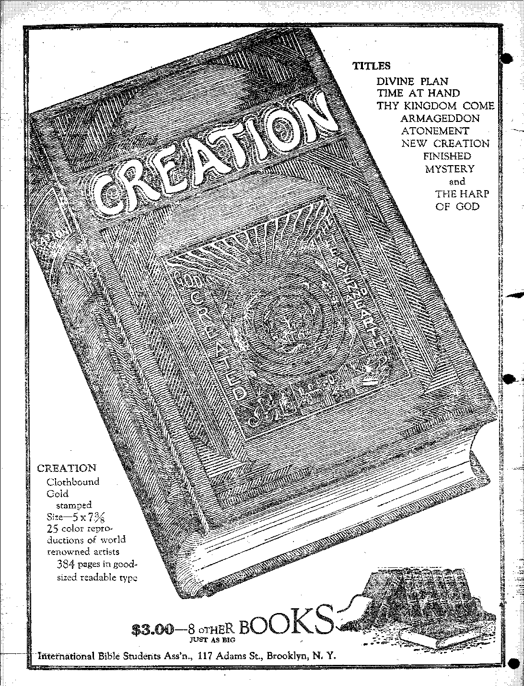

in this issue
MUSIC AND INSTRUMENTS an editorial tracing the history of music from eail , l tiirns
A achievements of sixty years in the Y
* field of submarine cables *
a contributed article showing the origin of the sacred name " Jehovah”
' address radiocast by
. - ~ ’ord
(Jgiw ' WIJHItlllllHIIIIIIIIHIIIIII
EVER y i H E R WEDNESDAY FIVE CEmS A COPY OR ONE DOLLAR A YEAR
Volume IX - No. 229 June 27, 1928
Wtarr-===========.==.:^
Labor and Economics
Pennsylvania’s Company CoaPTowns . .
Two Million New Workers Annually ........... 619
What Machinery Accomplishes ...... .
Social and Educational
Brooklyn Police to the Rescue ............. 620
Milwaukee’s Part-Time Schools ............. 62“
Tribune Evolutionists Tniimi>nm........... .
Finance—Com m erce—Tim n sfo station
Phone Service to Western Europe
Thirteen Girdles Around the .Earth ........... 624
Political—Domestic and Foreign
Europe’s Two Monsters ................ 621
Candid Concession of an Insider ............. 623
Home and Health Eat White Bread .....
Travel and Miscellany Music and Musical Instruments
Religion and Philosophy Thu Lost Name ................. .
Bi bus Questions and Answers .
Prosperity Sure (Part 4) . . .....
The Children’s Own Radio Story ....
Published every other Wednesday at 117 Adams Street, Brooklyn, N. T.» L*. S. A., by WOODWORTH, KNORR & MARTIN
Copartners and Proprietors Address; in Adams Street, Brooklyn, N. Y., V. 8. -4. CLAYTON J. WOODWORTH .. Editor ROBERT J. MARTIN .. Business Manager . NATHAN H. KNOKR .. Secretary and Treasurer
Five Cents a Copy—?1.00 a Year Make Remittances to THE COBDEN A GN Notice to Subscribers: Wo do not, an a rule, Bond an acknowledgment of a renewal or a new subscription. A renewal blank (carrying notice of expiration) is sent with the journal one month before the subscription expires. Change of address, when requested, may be expected to appear on address label within one month.
Foreign Offices
British ....... 34 Craven Terrace, London, W. 2, England Canadian . .... 40 Irwin Avenue, Toronto 5, Ontario, Canada Australasian ..... 495 Collins Street, Melbourne, Australia South African ..... 6 Belie Street, Cape Town, South Africa
Entered as second-class matter at Brooklyn, N. V-. under the Act of March 3, 1879.
Volume IX Brooklyn, N. Y., Wednesday, June 27, 1928 Number 229
___'................... , , . *---.. .... ■ , - , . y, , „„ ,L .......... ,■».,■■■ .. ------------
Music and Musical Instruments
THE musical instruments of the Bible are of three kinds: stringed instruments, consisting of the harp, psaltery, viol, dulcimer and sackbut; wind instruments, consisting of the cornet, flute, horn, organ, pipe and trumpet; and instruments of percussion, as bells, cymbal and tabret, or timbrel. Jubal, great-great-greatgreat grandson of Cain, is given as the inventor of two of these, the harp and organ.
. Jacob’s father-in-law, Laban, was familiar - with the tabret (tambourine) and harp, while Job was familiar with these two and with the . organ, so that the essentials of an orchestra were then in more or less common use.
When the ark was first brought into Jerusalem the accompanying orchestra consisted of psalteries, harps and cymbals. The psaltery > resembled a guitar. Subsequently the regular temple orchestra is said to have consisted of two to six psalteries, two to twelve flutes, trumpets from two upward without limit, harps from nine upward, and cymbals, only one pair.
The root word in the Hebrew, used to denote the inspiration under which the prophets spoke, is the same as that under which the min. strels sang. It is supposed that the enthusiasm of the true prophets for the name of Jehovah and that of the false prophets for Baal is the reason for this use of the Hebrew root. Music w i thout enthusiasm would hardly be music at all.
The encyclopedia tells us that stringed in-■ struments played with bows were unknowm at the beginning of the Christian era and that the ■ historical statement that Nero fiddled ’while .....- Rome burned must be put where many other .........■- historical statements belong, in the realm of myths.
. .^ Masterpieces of Music
HE Etude invited a number of musicians to express their opinions as to the world’s
greatest composers, ami found the favorites thirteen in number and in the' following order: Beethoven, Wagner, Bach, followed rather lamely by Mozart, Brahms, Schubert, Chopin, Schumann, Mendelssohn, Tchaikovsky, Debussy, Bizet and Franck.
The musical masterpieces themselves were voted as.seventeen in number: Die Meistersinger, Mass in B-Minor, Fifth Symphony, Tristan and Isolde, followed, after a big drop, by Don Giovanni, Brahm’s First Symphony, Mendelssohn’s Concerto for Violin, Chopin’s Sonata in B-FIat Minor, Schumann’s Piano Concerto, L’Apres-midi d’un Faun, Beethoven’s Sonata Opus III, Beethoven’s Seventh Symphony, St. Matthew Passion, Schubert’s Unfinished Symphony, Schubert’s Erlking and Parsifal.
Beethoven was and is a mystery to mankind. Music dominated his life, yet he was fussy, untidy, suspicious, and did not hesitate to abuse an innocent waiter by pouring a dish of hot stew over his head, meantime roaring with laughter until the tears ran down his face. He arose from his death-bed to shake his fist at the lightning and hail that disturbed his last moments on earth. One of his original manuscripts recent! j7 sold for $3,600.
Of all great musicians named above, Mendelssohn is believed to have had the most marvelous memory. He seldom needed a score, and before his death he played through from meifiqi ry the whole of Beethoven’s Ninth Symphony. It is told of him that on one occasion, when rehearsing without score a chorus from Bach's St. Matthew Passion, he called out at a cer-, tain point: “Please note that at the twenty-third bar the sopranos have C, and not C Sharp.”
Many of these composers enjoyed excellent health. Bach and Brahms were among those, the latter never sick in his life and able to sleep, at any time or place as long as he pleased;;. Wagner* stood on his head at sixty for the sheer fun of showing his friends how much he enjoyed life. Mozart and Schubert died young, anil in poverty, but their works will live for ever. < One of the works of the composer Rossini has an overture and a half because .Rossini hated to get out of bed. He had. partly completed an overture, writing in bed, when he dropped off to sleep. Awaking, he tried to recover his manuscript without leaving the bed. Finding that he could not reach it without too much effort lie started afresh.
611 .
What Music Is
MUSIC is the expression of tones produced by the mathematically regular vibrations of resonant bodies, in contradistinction to a confusion of irregular vibrations designated as noise. Middle C has 256 vibrations to the second, and is produced by sound waves something less than nine feet apart.
Waves at half that distance apart produce a tone one octave higher, half that again the next octave higher. The human ear is able to compass eleven octaves, but there are animals which can hoar notes higher and lower than is possible to any Iranian being.
The practical range of music is from 40 to 4,000 vibrations a second embracing seven octaves.. The highest note on the piano readies 4,224 vibrations, while the piccolo reaches 4,752 vibrations.
Thomas Edison complains that while there are something like 400.000,000 possible changes in tunes, yet he found in going over thousands of humorous songs that for the most part they were written to only nine tunes. He said that lie found by reversing some of the tunes the results were far more interesting and charming than the originals.
While music was and is largely an appeal to the emotions, yet it is also an appeal to the intellect; and it was the harmonization of these two factors that made Beethoven and Wagner the two greatest composers that have yet appeared upon the scene.
Gomposers have pictured every imaginable sound, the hoof-beats of horses, the fluttering of wings, the voices of animals, the rippling of w’aters, the patter of rain, the crashing of t.tiiundeiy and so on ad infinitum. Some of the recent compositions brave attempted to imitate riveting-machines, airpiana propellers, locomotive whistling and hissing, etc. Whether some of these late pieces are really music, or just noise, is a subject now being animatedly discussed.
The Human Voice
"DROBABLY the songs of the angels, when we get to hear them, if we ever do, are more beautiful than the songs of humans; but. so far as most of us have any direct knowledge, or are likely ever to have, the human voice is the most exquisite musical instrument ever made. Who that has heard the incomparable Russian Nightingale, Maria Kurenko, over the radio, can ever forget the inexpressible sweetness of that voice? But, by the end of the Millennial Age, most of the human family will no doubt be able to sing equally well. It is a gift .from God.
Not only is the human voice a gift from God, but there is reason to believe that He enjoys hearing mankind converse with one another. The Scriptures liken the murmur of multitudes in converse with one another to the babbling waters of the brook and declare that when they speak of God. and of their reverence for Him and their hopes in Him that He hearkens and hears and makes record in His book of remembrance.
A normal infant sings and is able to enjoy music before he can either walk or talk. The mother’s lullabies serve a real purpose in the child life. They gratify a natural desire and begin, the child’s musical training. It is astonishing what a musical mother can do for a child, both before and after the child’s birth.
Tone qualities are inherited. A tenor husband and. contralto wife will have tenor-and contralto children. A basso husband and soprano wife will have basso and soprano children. Marriages between bassos and contraltos, or between tenors and sopranos, result in baritone boys and mezzo-soprano girls.
Enrico Caruso’s wonderful voice, perhaps the most rich and powerful tener ever known, is not entirely lost to mankind, even if there were no phonograph records of it, because his little eight-year-old daughter is said to have fallen heir to it. She has already done a phonograph' record, though the record is not for sale.
A Few Celebrities
Madame Sch uma w-IIeimic, now sixty-seven years of age, always attracts great crowds of appreciative listeners whenever she elects
to sing. She is said to he a very lovable woman, who persisted in the training of her voice alter her teacher jn Vienna told her sue had no personality and would belter buy a sewing-machine and go to work.
Melba is sixty-three years of age and has already sung several farewells; but singers like Melba or S Vmr.a»:n-Heink can sing as many ... farewells as they like and the public will always come again when they have one more. Adelina Patti sang farewells for about twenty years.
Jean de Reszke, the man of.two voices, passed out of this life three years ago, at about the same time as Enrico Caruso, his greatest rival. De Reszke, after a brilliant career as a baritone, astonished mankind by an even more brilliant career as a tenor. De Reszke was two men in one.
The possession of two voices at cnee is a gift - which nature sometimes bestows. A London singer, Strathie Mackay, has the power to make one of his vocal chords vibrate at half the rate of the ether, or at a third, fourth or fifth of the rate; and, as a consequence, while singing the ordinary C in the treble clef he is able to sing the C in the bass also, two octaves lower. When discovered, Mackay was earning his living by cleaning windows.
Years ago the noted musical instructor Lou Wiley made a similar discovery at Bradford, Pa. He was stopping at a hotel when his trained ear heard one of the girls in the. kitchen sing four lines of a familiar piece, the first line in soprano, the next in alto, the next in tenor and the next in bass. She became one of the musical ' celebrities of her day.
Love of the Human Voice
LMOST anybody will pause for at least a moment to catch a little of the beauty’ of
a song from somebody who really knows how to sing. Last year at Tuebingen, Germany, a through express train was delayed four minutes because conductor, brakemen, porters and travelers stood in rapt attention while an Italian tenor sang an aria from “Tosca” in one Of the coaches. And it was after midnight, too. n-.w-’-'s of small means are often to be seen at the Metropolitan Opera House, New Yoiri. They have to stand in the rear of the top gallery, font they are there, in any went. One standee found himself in company with, a Russian piano teacher, a German butcher, an Italian laborer and a Cuban music student.
It is known that the radio is hurting the concert stage, if not killing it, though some managers claim to the contrary; yet today there are very few famous voices that are not heard over the radio. Millions of people have heard famous singers by radio who otherwise Avon Id never have heard them. Louise Homer and John McCormack, and Walter Damrosch, musical director, are often heard over the radio.
Sometimes a person gets a little too much music. A Harlem opera singer of note, one who had sung with Caruso and Melba, was haled into court by an irate neighbor because be had such a powerful voice that lie even shook the dishes in the cupboard below. The judge decided that he could sing between 8 a.m. 'and 10 p.m., and as loudly and powerfully as he liked, but must remain mute after that. i
One of the most popular love songs north of the Arctic Circle is “My Girl is Like a Fish”, the most beautiful thing the young man has ever seen, and the song is as popular with the girls as it is with the boys. Down in this part of the world, if a young man would tell his best girl that she is like a fish, it is doubtful whether he would make a hit with it.
Violin, Most Perfect Work of Mas
HE violin, or fiddle (either name is correct), is the most perfect work of man. In its perfected form it has been in existence about four hundred years. The tops are usually made of soft, straight-grained wood, as pine, spruce or balsam; while the hack, sides, neck and head are usually made of hard, highly-figured wood, as maple, sycamore or beech. The inner blocks and linings are usually of pine. All the wood is cut to the quarter, to enhance the tone.
While there are differences in size, outline, arching, sound-holes, peg-bokes, the swing of the scroll, the shape of the button, and the heights of the ribs and sides, yet little change in the violin seems possible or even desirable. The violins made today are no better than, if as good as, those made three hundred years ago.
Antonio Stradivari (1644-1737)-was the acknowledged king of voilin-makers. The instruments which he made are all catalogued. One-third of them are now in the United States. One purchased in 1923 by Zimhalist cost hhn $33,000. It is considered one of the four finest
in the' world. It is called the "Titian” because ' made of bright red wood. ' .
' Only less famous than Stradivari were other violin-makers of his day, Guarnerius del Gesu, NW Carlo Bergonzi and Amati. One of their secrets, the making of a solution of amber called Ore-mona 'Varnish, has been recently rediscovered ......after being lost for two hundred years. The .......popular belief that old violins are valuable -merely because they are old has no support.
It is claimed that the tone quality of a violin which has become sluggish may be improved by placing its sound-holes in close proximity to a radio loud speaker while good violin music is being reproduced. It not infrequently happens that valuable violins are ruined when they fall into the hands of repairmen who do not understand their business.
Seine Violin Celebrities
Fritz Kreisler, recognized as one of the greatest violinists of all time, is also a very fine man personally. It is said that the bulk of his earnings goes to care for the poor, the very poor, those unable to help themselves. Kreisler suffered much during the World War, and for no reason except that he is of German stock. He is one of the few great artists who never broadcast, because he believes the radio injurious to his profession. .
This last season New York, little old blase New York, went wild over a child violinist, the first time anything like that has happened in forty years. Yehudi Meiiuhim, ton years of age, played in Carnegie Hall to standing-room only, while the ablest musicians in New York wiped their eyes because he expressed so perfectly the emotions which charged their beings. The little fellow is quite unspoiled and has gone back to school at his home in San Francisco.
Now for a contrast! Imagine, if you can, a New York millionaire enroute from Europe to New York, who paid a noted violinist $500 to move to a distant part of the boat, because he so detested music and did not wish to hear him playing in a nearby cabin.
Probably that millionaire was a brother to the banker who had one glass eye of which he was very proud. He told an acquaintance that one of his eyes was glass, and asked him to guess which was his good one. Without hesitation the man replied, "The left one is your good one.” Asked how he knew, he said, “Because it has so much more sympathy in it.” It transpired that the left eye was the one made of glass.
Every autumn Atlanta, Ga., has a fiddlers’ contest. No one who can. read music by note is allowed to compete. The present holder of the title was on one occasion' let out of jail so that he could enter a contest of the. same kind, and he won the contest.
Paris is trying out a mechanical violin-player, the violinista, which is to the violin what the player-piano is to the piano. The notes are produced by perforated rolls, the same as on the player-piano. It is hard to believe that this invention can ever come to anything; yet it may. with us, though even the “forte” is little used in describing the instrument. The instrument in its present form is about two hundred years old.
■ Piano, Most Popular Instrument
"WTHEN old Nebuchadnezzar comes back and “ » hears Paderewski or Rubinstein or Franz
Liszt or Chopin or Mendelssohn sit down at a , Steinway concert grand piano and play one. of the Hungarian Rhapsodies or a Beethoven ‘ Concerto through to a finish and then goes and . looks at it, won’t he be surprised when he finds . what his old dulcimer o C 60G B. C. has come to be ?
. Originally the dulcimer, had only two hammers, one in each hand of the musician. What, he could do with those two hammers was all he
. could do. Now a Chicago musician with an eye _ to figures announces that in. the four minutes required to play Rubinstein’s “Staccato Etude” he exerted a force of 14,700 pounds on the keyboard. Some difference!
The harpsichord, superseded by the piano, was played with quills instead of hammers. The clavichord, also superseded by the piano, was much appreciated in its day because the tones could be made to quiver and thus give an echoing or trembling sound of exquisite sweetness and responsiveness. It was the favorite instrunient of Beethoven, Bach and all the early masters. ' ’ .
An attachment consisting principally of a fourth pedal can now be had which restores this clavichord quality of the piano. It enables performers to hold or swell or diminish musical tones after the piano keys have been struck. It is the invention of John Hays Hammond, Jr.
- Christofari, an Italian harpsichord builder, was the first to put hammers on his instrument.
■ He called his completed work “ccmhala colo : piano forte”, meaning “harpsichord with soft ; and loud”. The words “piano forte” still remain
Johann Sebastian Bach, one of the first pianotuners, is considered the father of modern music. Before his time musicians had only a limited number of keys in which to write their music, as they could not tune their instruments to other keys”; but he discovered the lost notes hidden in the strings and began to write music in keys hitherto unknown. Mozart, Chopin, Schumann, Liszt, and Rubinstein became his admirers and followers. It is admitted in Mu-rope that the best pianos and harps in the world are made in the United States.
A Few Piano Celebrities
WHEN Paderewski, generally considered the world’s greatest pianist, began his musical education at the Warsaw Conservatory of Music, his professors told him his .hands were not long enough to make., a good pianist and that he should give up the piano for a trombone. Since then the entire musical world has been glad to listen to him. Incidentally, he was the first president of his native land, Poland.
Paderewski was glad to give up political life and to get back to tIm piano. On one occasion he had surgical operations performed on the tips of all his fingers, to 'enable him to better reach the octave. His life has been one of hard work and well-deserved success.
Percy Grainger, another noted pianist, is accredited with, saying: “Anybody can become proficient at the piano. I’ll go further and say that anybody can become expert, even become a virtuoso, by ceaseless practice. The multitudes who never get anywhere are simply not sufficiently interested in their ambition.”
A new device for teaching- the piano consists of lights which appear above the keys on the student’s piano, aiding correct fingering and reading of notes. These lights are produced by electrical contacts from the instructors piano, who plays along with his pupil.
One of the most curious piano celebrities of all time was Blind Tom, who died four years ago. lie was a simpleton in everything except music, but had the remarkable power of remembering pertcetly and reproducing exactly any Jgge||p -his < presence.
Additionally, he could turn his back to-the piano, and with his hands behind him, play “The Fisher’s Hornpipe” -with one hand, “Yankee Doodle” with the other, and at the same time sing “Tramp, Tramp, Tramp, the Boys Ard Marching”,.in such a way that the three tunes-were melodiously intertwined. At ail his concerts Tom always led the applause.
In moth-infested climates piano users are recommended to always keep two small mothbags inside the piano. It may save much ex-pense in repairs.
Pipe Organs and Bagpipes
ORGANS of all kinds are in much less demand than they were a generation ago, and yet the music is peculiarly majestic, restful and desirable. Moreover, organ-playing is good exercise, is an aid to good complexion ami is an effective antidote for lassitude or ennui.
Pipe-organs are now played by electric motors so skilfully that listeners do not know the difference between machine operation and manual playing by an artist. As with playerpianos and other similar devices the music is obtained by the operation of perforated paper rolls crossing a slotted bar. With this mechanism a large pipe-organ can be operated anywhere without the aid of a musician. Indeed, radios and mechanical devices of all sorts axe rapidly putting an end to the hopes of thousands of musicians.
The pipe-organ in Roosevelt Park, Toi ranee, California, near Los Angeles, is so powerful that it was necessary to remove the console to a point a hundred feet away from the organ proper. When brought closei* the organist’s bench trembled so decidely that she was unable to obtain, the delicate effects required for fine music.
Some Scots maintain that the organ ployed by Jubal was a bagpipe without the bag; others* claim that the instrument originated in Chaldea and has been traced to Persia, Greece and Rome and thence to Scotland; while others, not Scots, are mean enough to claim that Some Highland cottager got the idea through stepping on a cat.
The bagpipe has nine tones, which have nothing to do with the chromatic scale and therefore nothing to do with music, yet there is no musical instrument in the world today which is as national and as much beloved by its users as the bagpipe. Bagpipe music can not be transposed from one key. to another, and as an instrument it is always out of tune. Newer makes have corrected these evils somewhat.
A bagpipe is similar to a church organ in principle. The player maintains the wind pressure on his drones and chanter by keeping the •hag full of wind and regulates the volume of sound by the pressure of his arm on the bag. There are still traveling pipers in Scotland who have all the pride engendered by living up to centuries of traditions.
The pipers of today, like those of a thousand years ago, are attired in plaid jackets, kilts and hose. Brooches hold the plaids at the shoulders. Jeweled dirks and powder-horns are at their sides. Jeweled eases containing knives and forks are in their garters. They still wear the tartans of their clans and sway slowly from side to side, as they play, just as the pipers have always done from time immemorial.
'Banjo, Flute, Kettle-Drum
■rpHE banjo, recognized for many years as •— America’s national musical instrument, but which for a time was nearly lost to sight, is now having a revival and in the bauds of a good performer is a very entertaining and rhythmical instrument.
A Cincinnati professor has made a collection of flutes and a study of them. There are 711 specimens in his collection, -among them flutes made of gold, jade, a rain’s horn and glass. 'When special effects are desired, the Boston Symphony Orchestra sends to Cincinnati to borrow the golden flute, finding no other instrument quite as sweet in tone quality. All these instruments have had their musical values determined by motion-pictures of the waves which they produce.
The tones of the kettle-drum, indicated by the usual notes written in the bass clef, are of the lowest register that the human ear can perceive, and as the tuning is wholly dependent upon the ear, the process is more difficult than is that of tuning any other orchestral instrument. The tympanist, as the performer on' a kettle-drum is called, must be a real musician. He is sometimes called ffihe conductor from the rear”.
Oboe, Saxophone, Trombone
T A. contest in London, Captain Samerzquig recently performed the unique stunt of holding a note on the oboe for two and one-half minutes without a break. Of course this has no musical significance, but is purely of interest as showing how long a single breath can be expended without any fresh intake."
The saxophone was invented in 1846 by a young man named Sax, a resident of Belgium and later of Paris. Though an excellent flute and clarinet player and a splendid workman, he was a poor business man and died penniless and forgotten. It was not until after his death that the saxophone gained its greatest favor. The saxophone is made in nine different sizes and styles, covering a wider range than any other family of instruments. It is easier to play than any other instrument, and is used principally for jazz bands or ragtime music.
The trombone was well known to the ancient Romans, and it is believed it may have been used by the Greeks also. The ancient bands of Venice consisted of trombones only. There were ten in the state band of Henry VIII, and six in the state bands of Queen Mary and Queen Elizabeth.
Recent Musical Inventions
IMPROVED tone and increased carrying power are claimed for a fife with a square instead of a round body. Advantages are claimed for an all-metal guitar, also for an all-metal clarinet. The latter comes from France.
A Philadelphia woman after twenty-seven years of experimentation, lias been granted basic patents for blending light with music. While music is being rendered by the singer or violinist the performer is flooded with lights of various colors and intensities, suited to the musical theme.
A Canadian, Morse Bobb, has invented an electrical -wave organ, an instrument in which the sound is produced electrically instead of by the blowing of air through pipes. It occupies little space and can be moved about with ease. It is claimed that this electrical organ can duplicate all the work of a cumbrous pipe-organ.
Much attention lias been given in the past year to the invention of Prof. Leo Theremin, of the Physicotechnical Institute of Leningrad, which produces ether-wave music by simply waving the hands before a modified radio transmitter. It, produces strange new sounds of a resonance and beauty that no musical instrument has yet been able to achieve. f - ff
A F?.w Orchestral Items ..
THE Illinois School for the Deaf has an orchestra composed of twenty-one pieces which are plawl by p-.-rsons who are deaf-miires, who have never heard a sound in their lives. If is clainn-l that 1: c hand m ar cx-Wrint - - one. Its players keep in touch with one another through their finely developed sense of vibration.
The first definite attempt to organize orchestras was about the end of the sixteenth century, coincident with the development of the opera. John Philip Sousa, who stood before a concert band for thirty years, declares that no band or orchestra is ever in perfect tune. Boston claims to have the finest orchestra and the worst regimental band in the United States.
A Minneapolis man who should have been putting his time to better use has assembled twenty-two pieces of string, wind and percus-— sion instruments, operated simultaneously or in succession with his own hands, feet, knees and mouth and by means of electrically connected motors. The result is said to considerably resemble a brass band.
’The “Hebrew Opera Company is giving low-priced operas in Palestine.
0 The Berlin Philharmonic Society is doing the same thing for music lovers in Berlin; and tile Art League of Service is doing something of the same work in the United States, and finding appreciative listeners.
Now for a musical laugh or two. A Polish orchestra has just gained the world’s record by a sustained performance of 33 hours and 10 minutes. No doubt most of the listeners were found dead when the race was over, because the whole time was spent on jazz.
In England, while Caesar Franck was carrying his symphony up to a climax he stopped suddenly, and, in the interval before it resumed, , a woman’s voice inquired tensely, “Tell me, my dear, where do you buy your stockings?” A phonograph record was being made at the time, and the stocking inquiry is on every record. The record is known as the “Stocking Symphony”.
•• Even greater possibilities were in store when at Carnegie Is all Sir Thomas Beecham’s suspenders broke away from his trousers when, he was in the most exciting part of directing a
P great orchestra. He bravely decided to finish his job and came off victorious, with no worse
consequences than one trouser leg sagging badly over his shoe. < : f ■ z
An item that is not so funny is the fact that 40,000 musical students go to New Aorfepwry year, hoping to get a start toward waking their ’fortunes but just now finding the musical field badly overloaded. Radio has done the musicians, as a body, a vast amount of haimu-nvv
In .France there are twelve hundred blind musicians who earn their living at musical work. Eight organists of large Paris churches arc-blind. TIiere are several blind composers and orchestra conductors in France. ’’
Odd Things Done with Music ’ •<
■JMTUSIC has recognized curative value in the XvJL treatment of the sick, the criminals, and the insane. It awakens the mind from apathy, inhibitions and obsessions. When the French Minister of Justice read some of the letters of the bad boys and girls who had just been favored with, some fine music, he wept and revoked an order which had been in effect for centuries prohibiting the entertainment of prisoners.
In Russia the bezprizorni (child ruffians) were largely subdued through the formation of a bezprizorni orchestra. At a concert their work was received 'with enthusiastic praise by critics. Esthonia is known to have preserved its independence, after seven hundred years of bondage, by keeping alive its ancient folksongs.
Cows give much more milk if music is played at the time of milking. A phonograph running in the milking room is all that is necessary. Sad to say, jazz is said to produce the best results. liens are said to be partial to bagpipe music, and will lay more if given a bagpipe concert.
Delicate music, such as violin or piano, aids the growth of the hair; while loud, obtrusive music, such as that of the saxophone, tuba or bass viol promotes baldness. FlowersI Warn away from musical vibrations. Xylophones .are used to test the carbon brushes*of cU-irk motors, The metronome is now used successfully in teaching shorthand and typewriting.
Experience has shown that v,-;g brings an increased demand for harmonicas.*”The” World War doubled the demand for them, and it still persists. The reason for this is not known. The old idea that performers on wind instruments are especially subject to tuberculosis is found to have no foundation in fact.
America exports more musical instruments than all the rest of the world together. Playerpianos of American manufacture are, literally, to be found in every corner of the world. The Baltimore and Ohio Railroad Company is out with a song entitled, “Hail, the B & O.”
A Few Words About Jazz
JAZZ is not. music, but is syncopation imported from Africa and used there for the same purpose for which it is used here, namely, to arouse passion. In America it was introduced by Chas. Washington, an African drummer in Vicksburg. “Chaz,” as he was commonly caHed. could not read music, but had the natural gift, of syncopation, brought from Africa and handed down by his forebears. It is the Devil’s own music.
Because of the eatchiness of “Chaz’s” drumming lie was called on to do his best on repeats. At the end of the chorus the leader would say, “Now, Chaz!” From this beginning came the wide- spread use of Chaz, more commonly spelled jazz. It had its origin in ragtime some quarter of a century ago.
Jazz has literally turned Handel’s Messiah into “Yes, We Have No Bananas”. Chopin was drawn upon for “My Alice Blue Gown” and “I’m Always Chasing Rainbows”. Strauss’s “The Beautiful Blue Danube” was the reservoir from which was drawn “Iola”. “The Volga Boat Song” was turned by the jazzers into “Russian Rose”, while “Lohengrin” was murdered to produce the buffoonery of “Where Did _ You Get That Hat?” All this is the murder of’ real music.
Sir Henry Coward, famous English musician, says:
“Jazz is a low type of primitive music, found-ed on crude rhythms suggested by stamping, feet and clapping hands. It puts emphasis on the grotesque by the banging and clanging of pots and pans or any shimmering metallic substance reinforced with special drums. It debases both music and instruments by making both farcical. The noble trombone is made to bray like an ass, guffaw like a village idiot and moan like a cow in distress. The silver-toned trumpet, associated, in poetry with seraphim, is made to screech and produce sounds like drawing a nail in a slate, tearing calico, or the wailing of a nocturnal tomcat. Jazz can not be made anything but the essence of vulgarity. The popularization of jazz and the attendants immodest dances is lowering the prestige of the white races.”
In many places the churches have gone in for jazz. But why not? They have gone in for every fool thing ever proposed, and if they refused to adopt jazz it would be a miracle.
When an orchestra was sent to a zoo iuj Philadelphia to record the reactions of the ani-1 mals to jazz it is recorded that Poetre, a twelve-1 year-old Asiatic elephant, was so disgusted that I he blew a trunkful of water all over his tor-1 mentors. Good for Poetre. He had more sensei than the dominies that are now putting on jazz] as part of their regular weekly shows. I
The Advantages
THERE is a real advantage in competition.
As a case in point take the Hell Gate bridge, which connects the Pennsylvania Railroad system. with the New Haven system. New Yorkers and Pittsburghers can use that route and not-pay a cent of extra fare, but everybody else must pay ninety cents extra for their railway ticket and seventy-five cents extra for each piece of baggage.
Moreover, if a through passenger knows he is going by that route and is shrewd enough to provide himself in advance with a ticket from New York to a New England point which -is of Competition
good via the Hell Gate route, such a ticket wil not be accepted without the payment of the additional ninety cents, unless he comes from .Pittsburgh, which is a common point of th^ Pennsylvania and New York Central systems.
Tn other words the Pennsylvania company ia making the people of the South and West paj dearlyfor the Hell Gate connection, butbecaus^ there is competition from New York and Pitts! burgh the New Yorkers and Pittsburghers gel off scot free.. That ought to show that eompetil tion is a good thing. I
Here and There About the World
............................iiiiil arc coal towns in Pennsylvania where no one may give a night’s lodging to a person objectionable to the coal company, towns where a traveling salesman can not enter without a written permit, and towns wnere no one may enter except physicians, undertakers, mnd draymen to move the tenants' goods.
■OME old men who are tire owners of businesses, and there are many such, quite forget that there are any other old men. in the world but themselves and have issued rules preventing the employment of any man over forty years of age, despite the fact that the older men, on account of their greater experience may be, and often are, more valuable than those younger. 'The theory is that younger men are more willing to sacrifice themselves to the speed demon.
faclories in New York city disclosed that ■only three of the factories were reported as “vely/ptah’’,- whiM.fwe^
half the number, were reported as ■’unnecessarily dirty”. In h.m of the factories tl^re had never been any medical examination of any of ■the-applicants for ■ employihent.'
lydingeihwn
■TM A GIN ri a situai ;oii v -mro wmmmg miners are so hard put to it that their wives have to wait at the pitlwad until a load of coal is brought up before they east get credit at the store for groceries for the family. And imagine the still worse conditions when the man himself is-brought up dead. Yet such conditions, we are told, exist in the American bituminous mining industry.
Too Much Sinclair Oil
IFor&rrs: Annually
■NE thing we can not get away from in the
United States, and do not wish to get away from, is the fact that every year there are two .inihion more boys and girls admitted into the ranks of the nation’s workers. Alongside this interesting fact it is noted that in the four years from 1923 to 1.927 there was need of nearly two million fewer workers in. the manufacturing industries, railways, coal mines, farming and building trades. Machinery is catching’ up, and one wonders what will become of the new boys and girls when it fully catches up.
America a Pagan Nation
TJishop McCoxxell, of the Methodist Epis-
copal Church in the United States, in an address in Jerusalem in March, declared: “I come from a nation which is in some’respects pagan. We subscribe to the doctrine of militarism and to the god of materialism, and we have given ourselves over to the pursuit of wealth.” Another speaker at the same missionary conference called attention to the fact that ninety-four percent of an African contingent of forced laborers working for a certain unnamed European. Christian nation had died, or, to put it bluntly, had been murdered by ill-treatment and overwork.
TH.E trouble with (be Sinrinlr oil is that there
is too much of it. It is running down over presidents, attorneys-gcneral, posiawsters-gen-eral, Presbyterian eiders, chairmen of national committees, secretaries of war. of the navy, of the interior and of the treasury untd it gets into everybody's eyes, tars, hair and teeth, and meantime everybody is wondering why the strong silent man is so sil-mt, but they are not • wondiling : why the ■ • Moes Mbt chMsiitog■ruOilll They understand that perfectly well, No wonder he wants to quit. Ue ‘has beard and seen enough oil to last for a lifetime.
SfiS«SSWSW
TOiWc^S. Sa&e : > ■ ||| :'
GP. Ceaiik, Wadena, Iowa, while walking
• with his two dogs, suffered a stroke and fell helpless between the rails. Thereupon one of the dogs, “Trove,” stood guard over his body while the other started down (he track toward an oncoming train and by his furious barking and charging of the engine attracted the notice of the fireman, who caused the engineer to stop the train in time to save Mr. Clark’s life. “Freckles,” the one that slopped the. train, was found mounted upon the pilot of the engine, fighting the locomotive for ail he was worth.
familiar with the movements of trains.
Five and Ten-Cent Stores
THE Woolworth, Kresge and Kress companies now operate among them 2,109 stores.
The average profit per store is about $2,000 a month. The Woolworth Company, with 1,491 stores, has only thirty-six buyers, which is less than one percent of what would be needed if the stores were run separately.
New York Now Overbuilt
THE claim is made that New York city, which a few years ago did. not have homes enough to care for its population, is now overbuilt to the extent of 57,000 apartments. This is not a large number for a city of the size of New York. A few too many apartments tends to make rentals more reasonable.
Hinkler’s Wonderful Flight
Bert Hinkler flew from England to Australia, 11,000 miles, in the month of February, completing the journey in sixteen days, thus practically cutting former records in half. His first day took him to Rome. In seven and one-half days he was in India; and in twelve and one-half days, in Singapore. On two occasions he made non-stop flights of 1,200 miles.
Brooklyn Police to the Rescue
WHEN Brooklyn police learned that a girl of twenty-one, a shirt factory operative, the sole support of father, mother and eight small brothers and sisters, had been cut down to half time, they loaded the family up with groceries, paid a month’s rent in advance, put in some coal, got the girl's employer to put her on full time, and at last accounts were trying to find a job for her father. Hurrah for the Brooklyn police!
Trinidad Versus New York
IN TRINIDAD, a short time ago, a negro pushed a squeaking wheelbarrow from the bank to the docks with boxes plainly marked “Gold”, and no guard. He made six trips through the crowd, none of whom interfered in any way. When the gold arrived in New York it was met by a half-dozen heavily armed detectives and policemen appointed to guard it. And the strange part of it is that New York is considered highly civilized and Trinidad is thought less so.
What Machinery Accomplishes
TpXPERTS who have figured on it declare that the machines operated in the United States produce more goods than could be manufactured by the hand-labor of the entire world.
Germany Forging Ahead
GERMANY is forging ahead wonderfully.
Six hundred thousand young men who used to enter the army every year are now being absorbed in agriculture and industry, and the whole country is humming like a. beehive.
Creation Still Going On
rpiIE discoverer of the Millikan rays, Dr.
Robert A. Millikan, of the California Institute of Technology, has put forward evidence which seems very conclusive that the process of creation is still going on in the heavens and, to use his own language, “that the cosmic rays which have been studied for the past few years constitute the announcements broadcast through the heavens of the birth of the ordinary ele- . ments out of positive and negative electrons.”
Phone Service to Western Europe ..........
rpELEPHONE service is now maintained reg-J- ularly between the eastern, part of the United States and the western part of Europe. Any one who desires and who has the price' may now talk with London, Paris, Brussells, Amsterdam, Berlin or Christiania. It is very plain to be seen how easily the Lord’s new government when fully established will fulfil the prediction, “He shall rebuke many nations afar off.” The thing will be done so simply and naturally that many men will, be slow in realizing that it is God, not man, that is back of these modern inventions.
Doctor Cadman Contradicts Moses
MOSES said to the Jews, “Choose life that ye’.may live,” and went on to speak of Christ, saying, “It shall come to pass that whosoever shall not hear that Prophet shall be destroyed from among the peopled But now comes Doctor Cadman, sure, in spite of Moges, that every man will have immortality by hook or crook somehow, and says that men can no more choose to continue their existence than they can choose to begin it. It all sounefe very fine, but it is neither Scripture nor sense, and it isn’t true. ,
Slumps in British Unions :<
• TN BRITISH trades unions the membership has declined since 1920 from more than eight and a quarter’ millions to less than five and a quarter millions. About 300,000 British workers left the. labor unions last year.
’France’s New Pension Scheme
FTER seven years’ discussion France has adopted a scheme of death, disability and
old age benefits which will employ ten percent of-- wages and salaries, with-a like sum from employers, totaling $200,000,000 annually, and will affect one-half of the populatioji of the country.
World’s Production of Aluminum
HE world’s production of aluminum in 1927 was 225,000 tons, of which the United
States produced 80,000 tons and Canada 30,000 "• tons. The net income of the principal American aluminum company is over $12,000,000 annually. France, Germany, Norway and Switzerland are large producers.
Europe's Two Monsters
uglielmo Ferbebo, historian, lias recently made the following interesting and truth
ful statement: “Europe seems to be menaced today by two monsters that are ready to devour her—nationalism and bolshevism. The intermediate forces between these two extreme doctrines were, however, already weakening before the war. The war has only accelerated the pace of evil.”
Italy’s Broken Promises
IN 1919 and 1920 Italy solemnly promised the 200.000 Germans of the South Tyrol that their languages and cultural institutions -would be respected and that their administrative employes would enjoy all the rights of Italy’s liberal.....democratic system. Today the German
language is proscribed, German school-masters and ministers and priests have been removed and Italians put .in their places, and Italian peasants are being brought in to break the hold which the German peasants have had upon the land for many centuries. All German newspapers have been stopped. The singing of German songs is forbidden, and German inscriptions on tombstones must be Italianized.
Machinery and the Making of Pig Iron ; GENERATION ago* great quantities of la-* bor "were* used in the inanut'«clur«* of pig iron. Seven men now:*do asunuch :as~:sixty men did a few years ago. In the unloading of pig* iron twro men now do the work which was once done by 128 workers. -
London’s High Electric Rates
VERYBODY in the United States wlio is acquainted with the facts knows that electric rates are much higher here than they should be; but they are much worse in London, where the average rates arc about’ double what they are in any other, of the world’s greatest cities, except Berlin, which is about the same.
Old-Aged Malarial Germs •
BRITISH scientist, Sir William Simpson, sealed malaria germs in a test-tube in November, 1901, and after twenty-six years inoculated a guinea-pig with them. The pig took the malaria and died, much to. the surprise of Sir William who had no knowledge that germs could live longer than fifteen years.
,sThe Big Five” and the League
EWSPAPER correspondents- at Geneva declare that everything of importance has
been taken out of the hands of the League of Nations. “The Big Five,” Britain, France, Germany, Italy and Japan, get together in a hotel room and decide what they will do; and then, to save the face of the League, they call a, public meeting of the council and repeat their private performance. ■
Britain’s Assistant UnderSecretary of State
Dismissed
I). Gbegory, Assistant Under-Secretary of
• State, of the British Foreign Office, formerly Secretary of the British Mission at the Vatican, has been dismissed from his post. At the time of the publication of the alleged Zinoviev letter, which caused the downfall of the British Labor Government, Mr. Gregory was suspended by Prime Minister MacDonald, because he was. believed guilty of misconduct in the matter. He refused to attend the inquiry which MacDonald instituted-. Gregory and a companion clerk namc-.i O’AIalley were Found guilty of speculating in French francs at a time when the British Government was trying to persuade France that no such speculations had the approval or knowledge of the British Government. Persons who can read between the lines ought not now to have much difficulty in locating the origin of the Zinoviev letter. Gregory and O’Malley are both Catholics.
Synthetic Fertilizer Next
THE Llano Colonist is authority for the statement that four tons of fertilizer can now be produced from one ton of straw, with the addition of suitable moisture, limestone, ammonium sulphate and acid phosphate. Straw of the fall before is ready for use as a fertilizer the next spring.
Dupont War Profits -
TXURING- the World War the Dupont Powder ■i-' Trust made so much money that it does not now know what to do with it It is said to be now the largest single stock-holding interest in the country. It' recently sold out its $14,000,000 of Steel Trust shares at a profit of about $2,600,000, all made in nine month’s tiin<j,
The War in Nicaragua '
UP TO February 1, 21 American boys had been killed in the war in Nicaragua, 45 had been wounded and 1,410 had been invalided home to the United States. How many Nicaraguans have been killed is not known. General Sandino, several times reported killed, insists that he is not dead.
Averages 78% Miles an Hour
IN THIS 9,390-mile flight from Washington to St. Louis, Mexico City, Panama, Bogota, Caracas, San Juan, Port au Prince and Havana, Colonel Lindbergh averaged 78$ miles an hour, because the actual flying time for the trip was 120 hours. This is considered slow for airplane travel.
Horrible Famine in Shantung
TN SEVENTY of the 107 counties in Shantung province half of the population of 24,000,000 people are now7 down to living on. one bowl of gruel a day. Excessive taxes, civil wars and failure of crops have discouraged the people, and two million of them, are migrating to Manchuria. In eomdless? villages the people are living on only bark and boiled grass.
Conditions in Mexico
MEXICO’S differences with the United States 1 over oil rights have all been satisfactorily settled by the voluntary action of the Mexican government. General Obregon, sole candidate for presidency of the Mexican republic, is out with a manifesto urging the Mexican people to abandon gambling and alcohol. ~
China’s Effective Boycott
A TRAVELER returned from China reports that in Hong Kong the Chinese boycott against westerners was so complete that although stopping at an $8.50 a day hotel he had to carry his own baggage and take care of his own room because the hitherto ultra-polite Chinese would do nothing for him.
Industrial Courts of Inquiry
A NOVELTY in England which is bringing excellent results is the industrial court of , inquiry, composed of fellow workers, who, in ease of any accident, hold an inquiry immediately upon the spot, to determine the cause of the accident, the blame and the remedy. It is found that a great reduction in accidents results. The men serve in alphabetical rotation.
Python Hunters of Borneo
K WRITER in a Singapore, Straits Settlements, paper reports having just returned from a trip to the interior of Borneo, where .his hosts made a habit of obtaining their meat supply by killing ten-foot pythons. One lithe athlete tackled the python in its home tree while a half-dozen waited below to dispatch it when it would fall to the ground.
Diphtheria Murders at Bundaberg
BUNDABERG, Australia, mourns the loss of twelve beautiful children sacrificed to the superstition that the filthy pus drawn from the veins of a sick horse and injected into the blood of the little ones will prevent diphtheria. In Dallas, Texas, in 1.919, ten little ones were thus killed; and after a similar tragedy at ■ Baden, near Vienna, in which six babies were slain, in September, 1924, the Austrian government put a stop to such injections. In sixty5i;s cases in the United States, parents have been awarded substantial damages for injuries thus done to their children. Infantile paralysis andj epileptic fits have followed such injections.
'Tanks Unromantic and Terrifying
fl 1'1 Ameer of Afghanistan saw British tanks level a brick house, go right through the walls of. a fort and go down the vertical walls of a ravine and up on the- other side and his well-expressed conclusion was, “How unromantic and terrifying Western warfare is.” The joke of it is that the Ameer is only a poor heathen visiting a Christian nation to find out how to live.
Milwaukee’s Part-Time Schools
IN MILWAUKEE there are thirteen thousand students employed in various industries who. are obliged by law to spend a certain number of hours in school every week. Part-time school la.ws are also in effect in New Pork and California. A prominent educator recently said of these schools that they constitute the best device ever offered in this or any other country for the improvement of the masses of the people.
Sweden Raising Food Electrically
WEDENis making a success of raising food electrically. Electric current Is chc-ap, and after two years of experimentation it has been found that all sorts of vegetables can be produced ten months in the year by running the current through the soil in glass-covered beds,’ Some of these electrical gardens are above the Arctic Circle. ■
‘If an Ox Fall into the Pit’
THE Lord said that if an ox should fall into the pit on the Sabbath day’ the owner would help it out as a matter of course: but it seems that nothing like that is allowed at Ocean Grove. A man who came there with, 'his sick and helpless wife was denied permission to enter with his automobile on a Sunday, and was obliged to carry his wife in his arms from point to point so that the Christianity of the pious Ocean Grovers might not be disturbed.
Candid Confession of an Insider
THE following letter from, a member of the
United States House of Representatives may be helpful to those who are expecting Christ’s kingdom to come about by legislation at Washington. It is addressed to one of our subscribers who had interested himself in a certain proposed reform:
Your letter has been received and with my endorsement. has been laid before the Committee. Do not get the idea it will effect any useful purpose. The Committee has already forgotten it and will, never recall it.
Why? This is a political government. Things are done or not done because the course taken is believed to be wise politically. The merits of a question are purely secondary, not to be considered until the political significance is carefully considered and the probable consequence forecast. If it is best for the party in power to do a given thing, it will be done; otherwise, not.
Nothing is going to be done by this session except pass the appropriation bills. There will be no tax reduction, no Muscle Shoals legislation, no farm relief, very probably no Mississippi flood relief, no reduction of freight rates, no reduction of power rates. Nothing will be done looking to the breaking of the strangle-hold that Invisible Government has upon Visible Government.
The Governor has appointed me Circuit Judge. I am soon resigning from Congress to go back home for keeps.
Not in the School Books (Selected)
UNTIL 1637 scalping was unknown in New
England. The Puritans began by offering cash for the heads of their enemies. Later they accepted scalps if both ears were attached. Bounties differed over a period of one hundred fifty years, and in different parts of the country. The French were first to offer bounties for the scalps of white people. The English quickly followed suit. At the time of this story the English were offering as high as $500 for a warrior’s scalp, and from $150 to $50 for those
of women and children. French prices were somewhat lower than the English. Over a long period of years human hair was a larger item of traffic than fur and in one lot the Senecas delivered and received payment for one thousand fifty scalps taken from the heads of v h ’•« men, women and children along the frontiers, Christian races, not savage ones, were the inspiration behind these horrible deeds, in that bloody dawn of our history when the United States was about to be born. ;
Thirteen Girdles Around the Eartli
Cable Construction and Laying <-11^
TJTTA percha is the sine qua non of cable construction. If it had never been discovered it is doubtful if there would be any submarine cables in the world today. It is apparently the only insulator sufficiently perfect to enable a wire to be carried through thou- -sands of miles of ocean depth and to bear upon its surface the news and business of the world.
In the latest cables there is now a thin wrapping of permalloy between the copper cables and the gutta percha exterior. This permalloy,......•
composed of eighty percent pure nickel and twenty percent pure iron, is the most easily magnetized and demagnetized of all metals, making it peculiarly valuable for submarine work, where large magnetic effects are desired from small currents.
There are three sizes of cable: 'deep sea,’ which is one inch in diameter and is laid where there is practically no movement on the bottom; 'intermediate,’ which Sis one and three-fourths inches in diameter and is used where there are greater strains; and 'shore end’, which is two and three-fourths inches in diameter ami is used close to shore, where the strains are greatest of all.
In laying cable an effort is- made to avoid subterranean mountain peaks, precipices ami gorges. Theoretically the cable should always lie in a bed of level mud. Just such a bed, four hundred miles wide, stretches from Europe to America in the North Atlantic. It is known as ‘Telegraph Plateau’, and was seemingly placed where it was .placed by the Creator for the very purpose for which it is used.
Three Great Inventions
HREE great inventions may be said to have made the cable a practical thing for everyday use. The first was the siphon recorder, invented by Lord Kelvin in 1870, an extremely delicate device by which a tiny siphon, with one end in the ink bottle and the other suspended over the paper, splutters tiny droplets of ink .....■
on the moving paper as the feeble signals come i in from the other side of the world. This -:~ magnetically operated instrument is the most : important part of modern cable apparatus. o The second great invention doubled the spqgd........
of all cables. This invention by Dr.. Alexander I
C24
TjWRGET,. for a moment, that you are living Jr in the wireless age, and think of the splendid achievements of the past sixty years in the field of submarine cables, during which time the earth has been girdled with a mileage of cables which would reach around it more than thirteen times.
In 1852 Dover and Ostend were connected by a cable seventy-five miles long, and two years later Sweden and Denmark were connected, as were also Italy and Corsica, and Corsica and Sardinia. The first transatlantic cable was laid in 1858, but. the current was so feeble that a message of ninety words took sixty-seven minutes to transmit. The cable weighed a ton to the mile. ■
The first practical transatlantic cable, laid in 1886, was lighter and stronger than the foregoing; but although if is now 'dead’, it served a great purpose in its day. The first tariff rates were $100 for twenty words, with $5 for each additional word. In 1872 the rates dropped to $1 a word and now range from 121c to $1.33, depending on destination and service desired.
On the first transatlantic cables the 'speed was about seven words a minute in one direction, while now the speed is forty to forty-five words a minute and in both directions, so that the carrying capacity of the cables is ten to twelve times what it was originally.
The first messages .required five to ten hours for delivery, where now the ordinary commercial time is thirty to sixty minutes, and for stock exchange purposes replies are often back in less than three minutes. Messages have been relayed around the world to point of origin in eight minutes.
It is claimed that a single Paris bankinghouse saves 10,500 francs a day by depositing each evening at the Central Telegraph Office four hundred reply-paid cablegrams to America. Each of the cablegrams contains three words, including address and signature. The saving is due to differences in exchange and in cable tolls when paid in Paris as compared with New York.
Vast sums are saved every day through the coding of messages. One code word frequently stands for ten or fifteen words, and sometimes for as many as one hundred.
Muirhead and Herbert Taylor, in 1875, rendered it possible to send messages both ways at the same time. Where the outside speed of cables had been thirty words a minute, with twenty as a good high speed, the cable was now capable of as high as sixty words a minule.
The third great invention was the simple and beautiful and efficient one of first punching the message as a series of holes in a paper tape. This perforated tape is then run through an automatic transmitter, and by means of a system of small levers the required signals are transmitted at any desired speed within the cable’s capacity.
Cable Maintenance and Jlepair
IF ALL parts of the ocean were of uniform depth, and if there were no sharp rocks to tear a cable, and no currents to sway and weaken it, no icebergs to grind it in two, no ship-anchors to tear it, no borers to cut into it, and no whales, sawfish or swordfish to attack it, cable maintenance would be quite a simple matter; but any of these things are liable to happen, and they all have happened many times.
..... The carcass of a whale has been hauled up from the ocean depths wrapped round and round in the loops of the cable which he mistakenly attacked. A. shark’s tooth has been found embedded in a cable covering. Trawls •■•or fishing boats have often caught and disrupted cables. The-•first cable froin England to France was picked up by a fisherman who thought it was a new kind of eel.
Cable repair ships carry about two hundred miles of repair cable in their tanks, and their .cruises, keep them out for six weeks at a time. Much of their work is near shore, because the worst corrosions take place at the shore ends, on account of the decomposed matter near the surface of the water. In ease of a break an expert repairman can locate the trouble electrically within a mile ; but the repairing of the Incak is not such an easy matter.
The usual time for bringing a cable to the deck of the repair vessel is about eight hours, for each end. Often, when it has almost reached the deck, the end of the cable will ■a fresh place and slide mockingly back Jp^sjgndgSliinesat' the .bottom. Repairs go on night and day and in all weathers. Cable repairing is a he-man’s job.
Tn warm waters the marine borer is a menace against which the only protection is a sheath of brass. Deep sea cable costs about $400 a nule, while shore end cable may cost as much as
a mile. 'The repairman is, of course, expected to be as economical as possible in the use of this expensive material. There are fifty cable laying and repair steamers in the world.
The Great Cable Companies
HPHE largest cable company in the world, The
Great Northern Telegraph Company, controls 110 cables, with a mileage of 53,962, and really constitutes a British girdle around the world. The 3,600-mi.le stretch from Vancouver to Fanning Island is the longest single cable section in the world. The only places where this British, telegraph girdle touches foreign.territory are at Madeira and St. Vincent, in the Cape Verde Islands, both belonging to Britain’s old ally, Portugal. ■
The Western Telegraph Company, also a British concern, controls 43 cables, with a mileage of 28,883. The Western Union,- American, controls 40 cables, with a total nautical mileage of 28,620. while the All America has 46 cables, with a total nautical mileage of 24,887.
? : ■< : ■ : y
The Commercial Company’s American cable from San Francisco to Manila, via Midway Islands and Guam, cost $12,000,000. In sever®; places depths of five to six miles were encountered, making its construction, especially between San Francisco and Honolulu, a difficult matter.
The nations of the world oven and operate over 2,000 short submarine cable lines, of which 770 are in Norway, but they average less than two miles in length. The United States owns 15 to and about Alaska, and 26 in the Philippines. Britain has 224, Japan 181, Germany 9'8, France 79, Netherlands 27, Spain 25. England owns 60 percent of the world’s cables.
During the World War Germany’s fourteen cables connecting all parts of the world were seized by Great Britain, France and. Japan, and are still operated by them. The United States obtained, none of these cables, even for temporary operation. That is the share the United States usually gets in these international robberfests, though always invited to pay liberally when anything;Ifilthgs,;n|t®|;|||||i||||f|| tional expense is
T'-mo is, a vast deal of international jealousy over cables. The United, States has a law giving the president authority to refuse to permit the landing of foreign-owned cables on American soil. China is under a cable monopoly owned by British and Danish interests.
The longest cable message on record is one of 115,000 words, describing. King Edward’s 1 coronation, and. is a piece of flummery and political propaganda of no real interest or benefit to mankind. But so long as the “people love to have it so” and do have it so, why object?
A t,
Eat White Bread
EAT white bread. You should eat more and more of it. The more of it you eat, especially if it is widely advertised and is exceptionally white, the better standing you will have with .your undertaker, and the better rating he will have in Dun’s and Bradstreet’s.
There is a reason for this. The white bread alone, even if you made it yourself, would be a big help to you in getting an early ride in the big black wagon, because it is robbed of eight of the minerals which you have in your body and which you need to keep constantly supplied.
Eat plenty of white bread. The more of it you eat the more quickly your doctor and druggist can retire; but you will retire first, head down. As a system for breaking down your eliminating apparatus and making you a first-class constipated American, nothing can equal it.
Eat plenty of white bread, the widbly advertised, ultra-white kind. Patent No. 1,158,934, now owned by the Ward Baking Company, of New York, shows that with each 100 pounds of bread you are entitled to chew and swallow along with it 1.75 ounces of plaster of paris. The use of this plaster of paris may not be as good for you as for the bread trust. When plenty of plaster of paris is used in mixing bread it is not necessary to use nearly so much sugar, and sugar is expensive, and besides that plaster of paris makes the bread very white, and people like to eat nice white bread.
Eat plenty of white bread. Be sure that it is widely advertised. Patent No. 1,158,933, also evened by the Ward Baking Company, of New York, shows that with each 100 pounds of bread there is coming your way .64 ounce of sal ammoniac. It used to be that all the sal ammoniac obtainable came from Egypt, where the sole source of supply w’as a soot formed by burning the dung of black cattle, horses, sheep and goats. The present supply is obtained otherwise, but as human food it is every way as desirable.
Stick to the white bread. If it is widely advertised, it will help you to show your loyalty to your fiiahorhood’ druggist. Patent No. 1,151,526, also owned by the Ward Baking Company, of New York, shows that with every 100 pounds you become a candidate for .0176 ounce of potassium bromate. That is not very much, but you would not need many bromides to make you popular with the makers of embalming fluids. Eat white bread.
“Good Luck” Letters
ONE of our valued contributors, writes us that he recently received an anonymous “Good Luck” letter which he was commanded to copy and send to four friends within twenty-four hours, otherwise he would have “Bad Luck”. Needless to say he threw it into the flames. Numerous such letters come to The Golden Age. They all go the same route, via the waste basket They are usually illiterate, meaningless jumbles.
It is surprising that anybody, at this day and age, could have any confidence in any superstition; yet there are many such. No superstitious. person has any love for God, any confidcmce in Him, any desire to please Him. Superstition is the exact opposite of faith.
To suppose that a God of wisdom, justice, love and power would be swayed one way or the other by the copying of a fool letter four times or four million times is ridiculous; but it all looks very serious to bead counters and holywater worshipers, whose deity seems to require a vast deal of the most abject and senseless kind of propitiation on the part of his numskull subjects.
Tribune Evolutionists Terrified
BIKE almost all other newspapers in the world today the New York Tribune has on its staff believers in evolution, but no believers in Almighty God, so far as we are aware. Apparently, if there are any believers in Almighty God, they are of little influence in the Tribune’s office. But the evolutionists seem to have everything their own way, and it is a timid, shivering, fearsome way, a way which shrinks from truth as from the black plague.
Away back last spring, May 8, 1927, to be exact, the Tribune published an fidiotorial’ entitled “'Men and Apes”, which contained the following paragraph:
There exists one pre-human fossil, and only one, which firm regard for proved fact requires us to accept as intermediate between man and the ape. This is Pithecanthropus Erectus, often called the 'ape-man of Java’. Few as are the bony fragments of this remarkable creature which Professor Eugene Dubois discovered, these fragments suffice to establish the creature as having a bodily structure, a brain capacity and probably a set of habits between those of modern man and of the higher living apes.
It happens that seventeen days prior to that time The Golden Age, under the title “The Only Proof of Evolution”, had published the following : ' .
The only proof of evolution that we have is that the evolutionists persist in making such monkeys of themselves. A little while ago they filled the Sunday specials with their loud and profusely illustrated announcements of the discovery of the missing link, the Pithecanthropus Erectus, as they called it. It was good of them to give us this fancy name for the original monkey which they claim as their ancestor. But once more the so-called scientists who are eager to glorify themselves and to discredit Almighty God in the eyes of man have been shown up on the front pages for what they are. Archaeologists of the National Museum at Washington have announced positively that the skull of the Pitheeanthropus Erectus is merely the knee-bone of an elephant. And that’s that.
It also happens that the subscribers of The Golden Age are among the most truth-hungry and critical denizens of the globe, and when one Bich had seen the two statements, and compared them, and had seen, that they agreed not the one with the other, he arose in his wrath and sent a letter to Washington inquir-which of the two. editors was to be believed, or whether it was exclusively editors the apostle had in mind when he said, “All men are liars.”
After the lapse of ten days, the letter meantime having reached the proper desk, back came a response from W. deC. Ravenel, acting assistant secretary of the Smithsonian Institution, reading as follows:
Receipt is acknowledged of your letter of May 9 and, in reply to your inquiry, I beg to say that the so-called Pithecanthropus Erectus is now generally considered to be the top part of a humerus of a fossil elephant. A note on the subject was published in the American Journal of Physical Anthropology, 'Volume X, No. 1, 1927. You can undoubtedly consult this article in the New York Public Library.
Having by this means ascertained that one of the editors was not a liar, Mr. Rich undertook to see how about the other, and wrote a fine letter to the managing editor of the Tribune, enclosing a copy of Mr. Ravenel’s letter and suggested a correction of the editorial. Mr. Rich in his letter even suggested that the best way out would be to write a “humerus” sketch and deny the whole evolution theory, and give the reasons which he also gave.
In three days came an acknowledgement that the correspondence had been handed to the editorial writers. Ten weeks later Mr. Rich jogged their failing memories and learned to his surprise that no trace of the previous correspondence was to be found; so he sent fresh copies and waited.
November came around and nothing had been done to correct the error, so Mr. Rich jogged them again. Still no result. Why should an editor admit a mistake? Few of them ever do. Most of them prefer to have their subscribers think they are infallible, and the worst of it is that most of the subscribers are just foolish enough to think that they are.
On came 1928 and when the “'million-dollar tooth” of the original Nebraska man turned out to be a wild pig’s tooth, the wise evolutionist who wields the Tribune’s ‘idiotorial’ pen on scientific subjects felt called upon to say something; so he said, February 21: :
To imply that the theory of evolution is in the least endangered by this discovery of a mistake about a single fossil is as though a bridge builder abandoned his bridge and helped to destroy it because a single girder, not yet built into the structure, was found de-foctivo ot' the testing floor. Certainly no evolutionist Mww that the theory is impaired. Had the tooth proved really to belong to some man-like or ape-like creature, that might have meant something about the history of the New World monkeys. It would neither have strengthened nor weakened materially the idea that evolution is a fact.
This was too much for Mr. Rich; so he took a farewell shot at the long-suffering but timid, fearsome and faint-hearted managing editor of the Tribune. And because it seems such a pity that Mr. Rich should make such a bold attack on an important editor we print the whole of Mr. Rich’s Exhibit No. 12:
February 23, 1928
Mr. A. B. Holcombe, Managing Editor,
New York Herald-Tribune,
225 W. 40th Street, New York, N. Y.
Dear Mr. Holcombe:
I want to take just one more shot at your editorials on evolution, even though you conveniently lost my former correspondence, concerning the Pithecanthropus Eroctns.
In your editorial of February 21, 1928, you state in the second paragraph, “It- would neither have strength-cried nor weakened the idea that evolution is a fact.” In my opinion the words “idea” and “fact” do not go well together when speaking of an hypothesis which has not been proven. An idea may or may not be a fact, but an unproven theory certainly should not- be. referred to as a fact.
I can readily understand after this second editorial why I did not receive a reply to some of my former correspondence. The editorial staff of the Tribune, at least the one responsible for the recent editorial, is, no doubt, a dyed-in-the-wool evolutionist,
How you can stand before the public and speak of evolution as a fact is beyond me. You may believe that it is, but neither you nor any one else has any proof of it at the present time, and in my humble opinion, never will. On the other hand, I believe in a great personal Creator and I believe that He did create the first pair as stated in Genesis. However, I could not stand before you and deciare that to be a fact, although I sincerely believe it in my own mind.
It seems to me to be a pity to subject thousands of unthinking people to such editorials as you write concerning evolution. If they all analyzed the situation and thought for themselves, it would be all right; but we both know that they do not and that the newspapers form their opinions for them. It is certainly regrettable that a newspaper should publish everything that it can lay its hands on in support of evolution and nothing in support of the special creation side of the story. Evidence in connection with the latter theory certainly is net lacking in the mind of any reasoning creature who is not blindly prejudiced.
Very truly vours,
R. G, Eich.
The Lost Name
MANKIND has lost a lot of things since Adam disobeyed God; and in view of the disrespect that it daily manifests toward its Creator, it is not a hit surprising that amongst the things that it has lost is the sacred name of God. Yes, God has a special personal name of his own. Ue confided it to man, and mankind lias mislaid, lost and forgotten it.
The word “God”, of course, is not a proper name, but a more or less general term that means some one mighty or powerful. Those-who use the King' James Bible can readily prove this for themselves by referring to Exodus 15:11 and looking in the margin. There they will find that the word “god” merely means a ^'mightylone”. The word “lord” is used in much the fanif, way. and means simply one who has others. Both-these words are J|||||te|||||.ed to the Creator, for He, above
By Robert C. Boyd
all others, has power and authority. They are also applied to others. For example, in Isaiah 9:6 Jesus is called a God; in John 10:34 and 35 His followers are called gods, and in 2 Corinthians 4:4 the same term is applied to the Devil.
But apart from these general terms, God has a personal name of His own. Abraham never knew it, neither did Isaac nor Jacob, but God graciously revealed it to Moses. (Exodus 6:3) And long afterwards when Moses came to write the beginning of the Hebrew Bible he often used this sacred name when referring to the Lord; but to the- human family today, it is a secret.
The Hebrew language in which the Old Testament was written did not contain proper vowels like ours. It was a language of consonants. The Old Testament, therefore, was written with
■ consonants only, and before it could be read aloud the reader must needs have learned by heart the sounds of the 'words.
This can be illustrated by writing down some familiar piece of scripture, omitting the vowels, such as :
HNE TH FTIIR ND TH MT.HR THT TH " DS M B LNG PN TH LND.
Any one familiar with the fifth commandment can readily read this, the consonants being sufficient to recall the words to the mind. But any one who did not know this text would not be able to make anything of it. .It was just like this with the Hebrew Bible. The writing gave them a rough idea of the meaning, but the sounds had to be learnt by heart.
So when. Moses, in writing the opening books of the Bible, came to the sacred name, he could write down only the consonants which it contained, that is, the Hebrew equivalents of the letters JIIVII. Moses knew how to say it, and would no doubt explain to his fellows what vowel sounds must be added to those four letters, and they in turn would pass on this knowledge from generation to generation.
At some period, however, the Jews came to believe that it was irreverent for them to utter this personal name of God’s; so whenever, in * reading- the Scriptures, they came to the word JH.VH, instead of saying it they said instead the word Aedonai, which means Lord. In this way the sound of the sacred name ceased to be pronounced; and as years, then centuries, went by it sank gradually into oblivion, and was forgotten. '
' This practice of substituting either the word Lord or God for the divine name has been followed by the translators of most of the common versions of the Bible. This often makes it very difficult to discern whether a text refers to God himself or to Jesus, who also is often spoken of as Lord, sometimes as God. The King James ■ version, however, does not leave us entirely in the dark, for whenever it uses the Avoid Lord or God as a. substitute for the sacred name, it prints them in. small capital letters thus: God, Loed.
The Jews, some time after their return from Babylon, set to work to revise their copies of the Scriptures and to remove any errors which ••• »;c.!rhafcejept in owing to continued copying and g ii|gg|||They also decided that they would cease ! to trust to memory for the vowel sounds of their words, and therefore invented a number of signs which they could put underneath each consonant to indicate the vowel that should follow it.
Having a great veneration for the sacred writings, they would not actually alter any Avoid of 'which they disapproved. They let it stand, but wrote the correct word in the margin. Tliis was all right as far as it went, but something had to be done to attract the readers eye when it came to a word that was to be suppressed, so that he would know to look in the margin for the correction. So this is what they did: Having written in the margin the consonants of the word Avhich they Avished to be read, they then placed its vowels in the word which, they wished to be omitted. The result was the production of a non-sense Avoid in the text, which would immediately warn the reader to look in the margin for the proper word.
To illustrate the process with English letters, let us suppose that Ave wished to suppress the ivord "goats” and have the word “sheep” read in. its place. It Avould. work out like this: the word “goats” would appear in the text as GTS. In the-margin we Avould write SHP and transfer the two e’s to the consonants of the unwanted Avord, and Avould have GeeTS, thus making a word that the reader Avould easily recognize as wrong.
As avg have said, the Jews latterly invariably read the Avoid Aedonai instead of the sacred name of God, and so this too was duly recorded in their revision. When they came to the letters JHVH they -wrote in the margin part of the ivord they Avished to be read, namely, Adni, and transferred the remaining vowels, e, o and a to the letters which they Avished to suppress, •• thus making JeHoVaH, a word which meant nothing to the Jewish reader Avho ivould then look to the margin and read Aedonai. .
So all avg knoAV of the Lord’s name is that its consonants are JHVIL Nobody can say what the missing vowels are. Some think that they are “a” and “e” and that the J should be pronounced like “y”, and the V like “av” making the Lord’s name “Yahweh”. This may or may not be true; nobody really knows. But wet do know that “"Jehovah” is almost certainly not the proper pronunciation of the name of God, because it is made up of the consonants of one Avord and the vowels of another.
No doubt some day when men’s -hearts are turned again to God and His righteousness, He will once again confide to them His name. And meanwhile, though the w'ord Jehovah is an artificial word, we are, nevertheless, very glad to have it, for it has played its..part in the destruction of that foolish belief that. God and Jesus are the same person. It has also helped us to remember that God has a name especially his own, and has kept bright in our minds the knowledge that to us there is but one God and His glory He will not give to any other. .
Bible Questions and Answers
UESTION: Is the world to continue always in one convulsion of trouble after another, as in past history?
Answer: No. After the severe time of trouble just ahead God intends to bless the people with peace, prosperity, health, life and happiness under the kingdom of His dear Son Christ Jesus. In Micah4: 3,4 we read, “And he [Christ Jesus] shall judge among many people, and rebuke strong nations afar off: and they shall beat their swords into plowshares, and their spears into pfuninghooks: nation shall not lift up sword against nation, neither shall they learn war., any more. But they shall sit ■ every man under his vine and under his fig Uee; and none shall make them afraid: for the mouth of the Lord of hosts hath spoken it.” This will be the kingdom for which Jesus taught His followers to pray, “Thy kingdom come. Thy will be done on earth as in heaven.” In Revelation 21:4,5 we read concerning that blessed time, “'And God shall wipe away all tears from their eyes; and there shall be no more death, neither sorrow, nor crying, neither shall there be any more pain: for the former things are passed away. And he that sat upon the throne said, Behold, 1 make all things new. And he said unto me, Write; for these words are true and faithful.”
Question: If the ministers set themselves right relative to the hell question, will this not make the creeds of Christendom to correspond with the Bible?
Answer: No. The" hell question is only one doctrine out of many that must be corrected to correspond with the Bible. To be set right with the Bible the churches will have to stop teaching the immortality of the soul, when in Ezekiel 18:4 we read, “The soul that sinneth it shall die.” The preachers will have to stop preaching the trinity; they will have to stop making religion a commercial proposition; they will have to cease passing the collection box: they will have to cease preaching the boys into war when the occasion arises; they will have to cease preaching the ordination of ministers by man-made institutions; they will have to renounce theology; they will have to take up the Bible, learn the truth, and then honestly tell the people what is the truth.
Question: Who wrote the oldest Bible that is i.n the world today ?
Answer: The Bible was written by holy men of old, the prophets, apostles and early disciples of Jesus, as they were moved by the holy spirit or invisible power of God. Jehovah God was the author of the Bible, He designed the plan and the teachings of this book, and the writers were His amanuenses. In 2 Timothy 3:16 we read, “All scriptures are given by inspiration of God, and are profitable for doctrine, for reproof, for correction, for instruction in righteousness.”
There is but one Bible of holy -scriptures. There are, however, different versions and translations of the same Bible. Some have taken away or added to the original Bible, which was the inspired Word of God; but these alterations for the most part are readily detected by the Bible student in a comparison with the oldest known manuscripts, and by a comparison with the doctrines of the portions of which there can be no doubt.
Question: Who wrote the Bible that you quote ?
Answer: Holy men of old, the prophets, apostles and early disciples of Christ wrote the Bible which we quote. The version that is generally quoted is the King James. We also quote the Rotherham, Douay, and other versions, finding sometimes that relative to certain verses one translation is better than another.
By 'Judge 'J. F. Rutherford .
IV
into war. America will do the same thing when war is declared. All these countries are making great preparations for war, and yet at the same time talking about peace. The last of these world powers described is the British Empire, the greatest the world has ever known. The rulers in America are allied with them, at least secretly if not openly.
The League of Nations is the outgrowth of an alliance between the nations of earth, and is described in the Scriptures as the “eighth kingdom”. The Lord then shows that His kingdom is represented by a stone which smites these world powers, and destroys them. Note this scripture: “And in the days of these kings shall the God of heaven set up a kingdom, which shall never be destroyed: and the kingdom shall not be left to other people, but it shall break in pieces and consume all these kingdoms, and it shall stand for ever.”—Daniel 2:44.
That means that the God of heaven is setting up a righteous kingdom which will destroy these evil systems, and that these selfish men will have no part in it because God’s kingdom will be a righteous one and stand for ever.
There is only one class of rulers under the sun that go by the name of Christ and claim to be God’s people. That is “Christendom” or so-called “organized Christianity”. Now7 note what the prophet says about these who are called by his name: “For, lo, I begin to bring evil on the city [organization] which is called by my name, and should ye be utterly unpunished? Ye shall not be unpunished: for I will call for a sword upon all the inhabitants of the earth, saith the Lord of hosts.”—Jer. 25: 29.
That the Lord intends to destroy these wicked systems that have oppressed the people is made clear by the words of the prophet: “Therefore prophesy thou against them all these words, and say unto them, The Lord shall roar from on high, and utter his voice from his holy habitation; he shall mightily roar upon his habitation; he shall give a shout, as they that tread the grapes, against all the inhabitants of the earth. A noise shall come even to the ends of the earth; for the Lord hath a controversy with the nations; he will plead with all flesh; he will give them that are wicked to the sword, saith the Lord. Thus saith the Lord of hosts, Behold,
Prosperity Sure
Part
BOTH of you are familiar with the perplexity and unrest and dissatisfaction amongst the peoples of earth. The people are familiar with the cruel,- harsh and unrighteous treatment they receive at the hands of the unholy alliance. That unholy alliance made up of Big Business, Professional Politicians, and Faithless Preachers has been deceiving the people and turning - their minds away from the true God and from the way of relief and blessings. God declared that the time would come when He would hear the cry of the peoples of earth and intervene in their behalf.
Having in mind these conditions, now take note of the scripture which reads: “Go to now, ye rich men, weep and howl for your miseries that shall come upon you. Your riches are corrupted, and your garments are moth eaten. Your gold and silver is cankered; and the rust of them shall be a witness against you, and shall eat your flesh as it were fixe. Ye have heaped treasure together for the last days. Behold, the hire of the laborers who have reaped down your fields, which is of you kept back by fraud, crieth: and the cries of them which have reaped are entered into the ears of the Lord of Sabaoth. Ye have lived in pleasure on the earth, and been wanton; ye have nourished your hearts,, as in a day of slaughter. Ye have condemned and killed the just; and he doth not re. si st you. Be patient therefore, brethren, unto the coming of the Lord.’’-—James 5:1-7.
It is remarkable how accurately God through 'his prophet long ago described present conditions. He pointed out that in the last days of the present evil world, or the rule of unrighteousness, there would be perilous times, that men would be lovers of themselves more than ' levers of God, having a form of godliness but denying the power thereof. (2 Timothy 3:1-5) This, is exactly what we see today. Then He caused His prophet to give a description of the . great world powers in the order in which they have arisen and fallen. The Prophet Daniel in the . second chapter gives a prophetic descrip-tipn of these world powers. He foretold there would be an effort on the part of the rulers to amalgamate the common people in a great military machine. That is exactly what we see go-■ ing on now, because the countries of Europe have .conscription laws that force the people
evil shall go forth from nation to nation, and a great whirlwind shall be raised up from the coasts of the earth. And the slain of the Lord shall be at that day from one end of the earth even unto the other end of the earth: they shall not be lamented, neither gathered, nor buried; they shall be dung upon the ground. Howl, ye shepherds, and cry; and wallow yourselves in the ashes, ye principal of the flock : for the days of your slaughter and of your dispersions are accomplished; and ye shall fall like a pleasant vessel.”—Jeremiah 25: BO-34.
Who now are the shepherds and the principal of their flocks ? The clergy, of course, are the shepherds; and the ‘'principal of their flocks” are the big men of power and influence who draw nigh unto the Lord with their lips while their hearts are far removed from the Lord, just as the prophet said it would he. (Isaiah 29:13) The Lord is going to spoil their fraudulent system, as the prophet says: “A voice of the cry of the shepherds, and an howling of the principal of the flock, shall be heard: for the Lord hath spoiled their pastures.”—Jer. 25: 36.
The Apostle Peter gave a description of this unholy alliance which constitutes the present evil world; and lie says it shall pass away in a great time of trouble, and then adds: “We, according to his promise, look for new heavens and a new earth, wherein dwelleth righteousness.”—2 Petfir 3: 8-13.
Rightoons Government
WHEN Jesus stood before Pilate, charged with sedition and a violation of the espionage law of that part of the Devil's organization, he answered Pilate and said: “My kingdom is not of this world: if my kingdom were of this world, then would my servants fight, that I should riot be delivered to the Jews: but now is mv kingdom not from hence.”—John 18:36. “
Thus He plainly says that the preachers do not tell the truth when they say the present evil, system is His kingdom. He taught His followers to pray and amongst other’ things to pray these words: “Thy kingdom come. Thy will be done in earth as it. is in heaven.” (Matthew 6:10) What kind of kingdom or government 'will that be? God’s prophet answers: “Ard t‘:u- roverninent shall be upon his [Christ ^8||fJg|iBi|lder: and his name shall be called Wonderful Counsellor, The mighty God, The everlasting Father, The Prince of Peace. Of •’A । the increase of his government and peace there shall be no end.”—Isaiah 9: 6, 7.
Mr. Adversity: But will not the Devil then interfere and deceive the- people? .
Mr. Success: That question is answered in Revelation 20:1-3, wherein it is written that ’ during that period of Christ’s reign the Devil shall be bound that ‘he might not deceive the people any more’.
Mr. Craving: I am beginning to see some light that the present system is evil and cruel and does not represent the Lord. May I ask, Are not all men created equal and should not all men have an equal and fair show?
Mr. Sttccess: The Scriptures declare that God “made of one blood all nations of men, for to dwell on all the face of the earth, and hath determined the times before appointed, and the bounds of their habitation”. (Acts 17: 26) The Americans, English, Germans, 'Italians, French, . Russians, all are human, beings; and there is no just cause or excuse why wars should be fomented between them and they be forced by their respective governing powers to kill each other. When the righteous government of the Lord is established at his second coming and kingdom, then there will be no more war. I | can not go fully into this mater here for want of time; but there is a book called Creation, published by the International Bible Students Association, that fully explains this matter. I can briefly call your attention to some Scriptural proof.
God’s prophet shows that in the kingdom the. nations and peoples will say: “Come ye, and" let us go up to the mountain of the Lord, to the house of the God of Jaco'b: and he will teach us of his ways; . . . they shall beat their swords into plowshares, and their spears into priming-hooks: nation shall not lift up sword against nation, neither shall they learn war any more.”—Isaiah 2: 2-4; Micah 4:1-3.
No profiteer, politician or faithless preacher will then be able to harangue the people, misrepresent the facts, and lead them into war and other trouble. It is written: “Judgment also will I lay to the line, and righteousness to the plummet; and the hail, shall sweep away the refuge of lies, and the waters shall overflow the hiding place.”—Isaiah 28:17. ........v
The lies that have been told the people will J bo swept away ; and their hiding places will be
^pneovered by Truth, which is represented by the waters. - . ”
The Ix>rd Jesus Christ, the invisible Buler of the new world, will be represented on earth -by his faithful - representatives, to wit, Abraham, Jacob, Isaiah, and the other faithful prophets, whom Cod will resurrect.—Hebrews, ll.th«hapter ; John 5 : 29 ; Psalm 45:16. .
Christ shall be the invisible King and rule in righteousness. “Behold, a king shall reign in righteousness, and princes shall rule in judgment?' (Isaiah 32:1) Then all the people will begin to learn what is right and true, as it is written: “With my soul have .1 desired thee in the night; yea, with my spirit within me will I seek thee early: for when thy judgments are in the earth, the inhabitants of the world will learn righteousness.”—Isaiah 26: 9.
The mass of people want, to do right if they are permitted to do it; and the Lord’s righteous ■—-kingdom will show them the right way.
No profiteers will be permitted to ply their unrighteous business amongst the people then; because it is written: “They shall not hurt nor destroy in all my holy mountain [kingdom]." ( Isaiah 11:9) Nor shall the people labor in vain.—Isaiah 65: 23.
Prosperity .
/'NOD made the man for earth, and made the NJ earth for man to dwell upon for ever.
■(Isaiah -45:.12,18) God has permitted man to with tm- thorns and thistles and have « rats failures end much sorrow and disappointment to teach him the lesson that evil brings, arid 'to ' turn his mind in the right way. When thwEord's. kingdom is in"full sway, “then shall the earth yield her increase; and God, even our own God, shall bless us.”—Psalm 67: 6.
Mudi of the land of earth has lain desolate. Under the righteous reign of Messiah it will be .matte-prosperous for all, as it i s written: “The -v-wMsness,and the solitary place, shall be glad "foFthenr;; shall rejoice, and blos
som as the rose. It shall blossom abundantly, aruLrejoiee even "with joy and singing; the glory of Lebanon 'shall he g=ven unto it, the excellency of Cannel and Sharon; they shall see the glory of the Lord, and the excellency of our God, Strengthen ye the weak hands, and con-I|llitil?y-JBaiah 35:1-3.
tilled, where-
All. passed by. And they shall say, .This land that .was desolate is become like; the garden of Eden;
■and the waste, and. desolate, -and ruined cities, are become fenced, and are inhabited.”—Ezekiel 36:34,35.
Then the wealthy and irdiuerdial will not have the advantage in the Courts nor anywhere else, but the poor shall be judged in righteousness. “With•■righteousness shall he judge the poor, and reprove with equity for the meek of the earth.”—Isaiah 11: 4.
You bought a lot and built a house, that you might have a home to live in; but now you have been compelled to move out of it because the taker of usury has made it impossible for you to live in it. But when all the people are prosperous, and unrighteousness is not permitted, then “they shall build houses, and inhabit them; . . . They shall not build, and another inhabit; they shall not plant, and another eat: for as the days of a tree are the days of my people.”—Isaiah 65: 21, 22.
Prosperity will not be only for a few, but .for all people. “'And in this mountain [kingdom] shall the Lord of hosts make unto all people a feast of fat things, a feast of wines on the lees, of fat things full of marrow, of wines on the lees well refi ned.” (Isaiah 25: 6) Then‘every man shall sit under his own vine and fig tree, and none shall make him afraid’.
Mr. Adversity: But how can the people enjoy these things if they still continue to be sick?
Mr. Success: But they will not continue to be sick. It is written in the Scriptures that the Lord says that during the kingdom “I will bring it health mid cure, and I will cure them, and will reveal unto them the abundance of peace and truth." (Jeremiah 33:6) And then “the inhabitant shall not sav, I am sick”.— • Isaiah 33:24.
We all agree that every sane man wants to live. We know that nothing that the unholy alliance has taught the people indicates how they; could get life everlasting in happiness. Jesus declared: “This is life eternal, that they might know thee the only true God, and Jesus Christy-, whom thou hast sent.”—John 17: 3. ■
The death and resurrection of Jesus is a guarantee that every man shall have an oppor9 tunity to live. During his reign they will be told the truth, as the scriptures I have cited show you. Then they will know God. . The knowledge of the glory of God will fill the earth
m n*
as the -waters fill the deep (Habakkuk 2:14); and everybody will know Him, from the least to the greatest. (Jeremiah 31:34) Now, says Jesus, those who know Him and obey shall live and not die. “Verily, verily, I say unto you, If a man keep my saying, he shall never see death.” (John 8:51) “And whosoever liveth and believeth in me shall never die.”—John 11:26; Ezekiel 18:27, 28. -
When the people are prosperous, have plenty to eat and to wear, have a peaceful home in which to reside; and men can sit under their own vine and fig tree without fear; when they are no longer sick and have no fear of sickness; when they know and obey the Lord, which means to live for ever, then they will be happy indeed. About this the prophet writes when he says: “They shall come to Zion [which is God’s organization] with songs, and everlasting joy upon their heads: . . . and sorrow and sighing shall flee away ”—Isaiah 35:10.
There is abundant evidence concerning the Lord’s second coming and the end of the world that it is now at hand. This matter is fully setu forth in the book above mentioned.
GOLDEN AGE
The reason why there is so much deception, unfaithfulness and misrepresentation at this time, the reason for the World War and the i pestilence and famine that followed, the reason i why there is so much distress and perplexity J -upon the earth, is that we have come to the end i of the old and to the beginning of the new. The ? days of prosperity are just here. There will I be a short, sharp time of trouble; and then § lasting peace and prosperity shall come to the ; people. ;
Mr. Adversity: Is that the reason you ap- j pear, Mr. Success, to be so happy? i
Mr. Success: That is exactly the reason.-My ; faith and confidence in God is full and complete. I know that he is a just and loving God; ; and that his every act toward man is unselfish; 1 that now his due time has come to exercise His : loving-kindness toward the people by giving—| them a knowledge of the truth and a full opportunity to enter upon everlasting peace, life, | prosperity and happiness. |
. The Downfall of Hypocrisy
[Radiocast from Station WBBR, New York, by E. L. Beaulieu.]
HYPOCRISY is so common a thing that it passes unnoticed. It is so familiar that no attention is paid to it, and so much expected that it is accepted as a matter of course. In fact, hypocrisy is so ever-present that often it is not recognized for what it is, and only its absence attracts attention. It is called by different names in different surroundings, but its essential characteristics do not change.
Amongst nations it is glorified as diplomacy, and relied upon to gain advantage. It is considered to be cleverness in a lawyer 'who will present only such part of the facts as appear to strengthen his own side of the case. “High-pressure” salesmanship employs it, setting forth benefits which the customer will not. realize. Professional gamblers cultivate it, and call it a “poker face”. The so-called “art of bluffing” is really hypocrisy; but in plain English, hypocrisy is- lying. .
What is Hypocrisy?
flMIE word “hypocrisy” means deceit; and is derived', from the Greek, where' it means stage; An actor im a play pretends an emotion not his own, and i plays a part which may be far different from -himself. The Greeks called him a hypocrite, or pretender; and this word thus comes down to 1 us as one who assumes to be -what he is not.
Individuals, groups, or nations, therefore, that pretend to be something they are not, that j state they have good motives when they have evil ones, that try to make others believe they ; are acting for the good of others or of all when J in reality they are acting in their own selfish : interests, are hypocrites, and they are practis- j ing hypocrisy. '
Hypocrisy and selfishness go hand in hand, j for hypocrisy is the cloak of selfishness. It preserves reputation by hiding evil motives, and , because it is deceit it helps to accomplish se.lf-,.. ish ends in the guise of doing particular or j general good. Since selfishness is the main-h spring of our present civilization, it will he : seen that hypocrisy is as widespread as civilization itself. .
Mankind is devoted to the principle that the® acquisition of glory, fame, .wealth, and
^is .success, and the means used io acquire these Wis of secondary importance. When force can be
used, it is used. Witness the wars of history, the struggles between classes, and cutthroat - competition.
' But open warfare is not always practicable, -.—and often can not be used. Then comes the time
for honeyed words and smooth-speeches. These abound at peace conferences and get-together meetings, but their purpose is the same as was ■the purpose of force, to accomplish selfish ends, this time by hypocrisy.
Present Civilization Hypocritical .
IT IS not generally realized that our civilization is.a hypocritical one, and that hypocrisy taints every phase of it. Corruption, of course, ■ would be admitted. Dishonest politicians, grasping financiers, and preachers who should be in the real estate business are all about us.
But I am not talking about the rottenness of-the worst elements of society. I would call attention to the character of our civilization at its best. The petty grafting of the politician, even .. though, he steals millions from his fellow citizens, is a small matter. If he gets eaught, he ......is-.......held up to the public scorn and may go to although he generally buys his way out.
......- Far more important is the attitude of nations as they sit around the council table. Are the nations honest as they sit at Versailles, at
......Geneva, or at Havana? The statesmen of the nations are not corrupt in the ordinary way. They steal no money for themselves. But as the representatives of nations, do they not pretend to .false motives and utter hypocrisies ?
Hypocrisy of Nations
......■ -TEHE great governments of earth exist pre
-®- sumably for the well-being of the people ......~gw©3?aed. -Vet every great nation of earth is
oppressive, some less so, some more so. Some oppress their colonies or dependent possessions for the benefit of the home populace. All, in some form or other, oppress the poorer classes for the .di reel or indirect benefit of the ruling classes, the owning element as distinguished from the laboring element of society. In the present ’day of education and general knowl-can not be done openly. The result WiO^pcnsy^—....... .
4P The possessions of a country require protec
tion, and the owners are ever on the lookout for ways of adding to them. The great nations of earth, therefore, keep standing armies and large navies to “preserve the peace”. “Preparedness” is never for war, but somehow it always results in war when the preparations are considered ample. Wars are always aggressive on at least one side, generally on both sides. The victor expects to. make large material gains.
The instigators of wars as a rule, however, do not fight them. That disagreeable job is wished onto the common people. The common people must have a reason; so a reason is given them. In past ages they were promised plunder. But that is out of date. Nowadays the ruling classes want all the plunder themselves; so new reasons must be found to satisfy the common man. In the late World Wat lie fought for “principle”. In Central European countries the armies fought to “protect the fatherland”, and the Allies fought “to' save the world for democracy”. Both reasons were false ones. The nations which put them forth were hypocrites. The war was fought for empire and commerce, and the spoils of war are limited only by “ability to pay”.
Financiers Too?
WHEN we turn to the financial element of society, hypocrisy is still to be found. As just seen, the political element really exists for the protection of the financial element. But in some phases there exists a lack of harmony between the two. Some of the so-called “servants of the people” are really anxious to serve the people, and that won’t do at all.
Present-day society exists on the theory that capital is necessary for the well-being of the people, and that labor could not find employment without capital. Finding no employment, according to theory, labor would then starve to death. It is much easier to admit this contention than to argue against it. It really is an evasive one, for it does not get at the root of the abuses of capital.
The question is not whether capital shall exist, but who shall own it.' Real capital is the stored up product of labor. That being the case, it is self-evident who rightfully owns it; namely, the producers, of course, labor as a whole. Now the most perfect organization of all who work is the nation. Yet when government ownership of even the commonest public service is mentioned, some are ready to cry, "Confiscation,” and to talk about "property rights”. The purpose is to retain control of wealth. The attitude is one of hypocrisy.
The people must be fooled, they must be kept satisfied. Discontent is the worst foe of organized society. On the other hand, the satisfying of the people must not cost too much. What is to be done? The financier, and the politician as well, resorts to the age-old method. The people must be taught to be good. They must have religion.
And who should be examples of the people but the leaders themselves, who occupy promi-- nent seats in their favorite churches every Sunday morning? They have good reason for being there. It is good business, likewise good politics. And the Church does not offend them nor condemn them.
Surely Not the Clergy?
THIS brings us to the. third great ruling element, the ecclesiastical. Here we have an element supposedly devoted to the interests of righteousness and consecrated to the service of God by means of doing good to His creatures. The claim is made that the members of this class stand as the representatives of God on earth, for the purpose of teaching His principles.
Since here we have the highest claims for righteousness, here we also have the most favorable field for hypocrisy. And what do we find? We find the politicians and the financiers' are not offended or condemned, because their preachers say only those things which the congregations want said.
To condemn the wealthy would mean stopping the financial support of the church. And as the church is frequently in -polities and wants political favors in the way of certain laves, it will not do to offend the politicians either.
Their only course is to uphold the present order, to try to preserve our present civilization, which means that they must do their bit toward lulling the people to sleep and keeping them satisfied. Instead of representing God, they are really representing His enemies. God loves the human race, and, as we shall, shortly see, plans the destruction of hypocrisy.
The ecclesiastics, claiming to represent Him, love their positions more than they love God’s principles. They are like the Pharisees of old. "They bind heavy burdens and grievous to be borne, and .lay them on men’s shoulders, . . . but all their works they do to be seen of men^ . . . [They] love the uppermost rooms at th* feasts, and the chief seats in the synagogues, and greetings in the markets, and to be called of men, Master, Master.”—Matthew 23:4-7.
Jesus did not mince matters in His description of them. He said: "Woe unto you, scribes _ and Pharisees, hypocrites! for ye devour widows’ houses, and for a pretense make long prayer: therefore ye shall receive the greater damnation.”—Matthew 23:14.
Clergy a Tool
npHAT the subservient clergy are merely the -L tool of high finance and hypocritical polities is proven not only by their every-day acts, but more particularly in their attitude in times of great public stress. Always are they on the side of “law and order”, that is to say, on the controlling, exploiting, and oppressing side.
In every great war, the clergy are in the — fore, urging the men to fight: and they do this in utter disregard of the principles of Christ, the Prince of Peace, who taught His disciples, to -love one another and even their enemies. The specious excuses the clergy give for this unrighteous and hypocritical course are many and varied. They are all equally false and beside^ the point. The real reason is, they dare not^ oppose their allies, the politicians and financiers, for to do so would mean the loss of position. Z
Additionally, the modernist clergy are convicted of having taught what they do not be- ~ lieve. Modernism as publicly taught is quite a recent thing. It is really only a few years old. .1 Twenty years ago it was unheard of. Did the A modernist clergy so recently change their views? No, not quite.
While undoubtedly their views have undergone a progressive change, it has been only since the World War that they dared to air them. A few courageous men began to declare their real beliefs (or lack of beliefs), and all of 7 a sudden their number was legion. The most q of them had not dared to declare their lack of faith in old dogmas; they covered up their unbelief by giving moral lectures and inspirational sermons, but left doctrines strictly alone. ’ Some of them scarcely even believe in God, and '-■= certainly have but little use for His revealed Word.
Their previous hypocrisy is now revealed? f
«d their present degree of veracity we- can ly guess at. Truly, “ihis people draweth nigh unto me with their hornureth xae
with their lips;, but their heart is far from me.” —-Matthew 15: 8. ■
iIF&y Doeg God Permit Hypocrisy? ■ ■
AS WE see- the- three .. great ruling elements
Uras arrayed in their true garments, not garments of righteousness but of hypocrisy, the scene is a dark one. We wonder why God permits it to exist, and when He will put a stop to it. We inquire what His purposes are, and whether He, as the only powerful friend of the oppressed people, will come to their rescue.
God is not pleased with the situation, but permits it. Since Jehovah God is revealed in nature and by the Bible to be all-wise and allpowerful, to act always justly, and to be the very personification of love, the permission of ..^evil and the present hypocritical and iniquitous civilization must be in accordance with His purposes.
The Bible reveals the reason. It is 'to give mankind an experience with the principles of unrighteousness in operation. Having done this, God wall give mankind the experience with ^he.......principles of righteousness in operation,
thus afford them the contrast. But even . this reason would not be sufficient if we did not know the circumstances.
' God is not the author of evil, and did not ■ institute the present civilization even for the purpose of an object lesson. Man got himself into the situation by following the Devil, who isJ.-he founder of the present civilization, and the pattern of its rulers.
Origin of Hypocrisy ■
T.....ET us notice how this came about. Hypoc-
’tri risy results from the desire to control unrighteously. Since this can not be done openly in the face of superior force, it must be done under cover, and deceit is resorted to. Lucifer, a mighty angel of heaven, desired, to rule. He wanted dominion. Just as modern nations want dominion, and just as modern individuals want power, so Lucifer wanted them. He wanted to be a filter like God Himself. He said: “I will ■ exalt roy throne above the stars of God: . . . I willbelike the Most High.”—Isaiah 14:13,14.
As a small beginning, he desired to get con-'the human race. His: only possible course was one of deception. He' deceived, and? overreached our first- parents. He appeared..as a serpent, which,.means deceiver, fie pretended to confer benefits, but in reality lie was man’s worst enemy.. He was the first hypocrite, for he appeared as a friend. “Satan himself is transformed into an angel of light.”—2 Cor. 11:14. ■ Satan, as Lucifer (which means shining one, morning-star), had bt'en a trusted servant of God. He betrayed his trust. Proud of heart, he became arrogant, disloyal, ungrateful. Seeking his own aggrandizement, lie became a hypocrite. His policy has won him temporary success, for he really is, as the Apostle Paul .calls him, “the god of this world.”—2 Corinthians 4:4.
He is styled by the Prophet Isaiah, “the king of Babylon.” (Isaiah 14:4) The word “Babylon” is derived from Babel,-and means confusion. Literal Babylon fell long ago, but its king is still ruling on earth; for literal Babylon symbolized the hypocritical, three-headed, confused method of control which is still, in vogue, and without which present civilization could not exist. . .
Having this thought in mind, the prophecies of Isaiah concerning the destruction of Babylon immediately become fraught with, new meaning. They take on present importance. They show something concerning the destruction of Babylon, and therefore of the present system of hypocrisy. .
Not to Last For Ever
SOME have thought our civilization will last for ever. Those who benefit by it hope for its continuance. But God has all the people in mind and will destroy it. Whatever the means used, “it shall come as a destruction from the Almighty.” (Isaiah 13:6) Before considering its destruction,.however, let us notice something concerning the One whom Jehovah, is using to carry out His purposes.
Lucifer, who became Satan, the Devil, was unfaithful. The same Bible that gives us the record of his unfaithfulness, also gives us an account of the loyalty of another great being. Another mighty angel of God was highly honored of Him, and this .one was truly grateful. He “did not meditate a usurpation to be like God, but divested himself, taking a bondman’s form, having been made in the likeness of men; and being in condition as a man, he: humbled himself, becoming obedient unfo 'death, even the death of the cross.”—Phil. 2:6-8, Diaglott. -
This being, Jesus, the Anointed, having been tested to the uttermost and proven worthy, is entrusted with the outworking of God’s plan. “God also hath highly exalted" him, and given him, & name which is above every name: that at, the name of Jesus every knee should bow, of things in. heaven, and things in earth, and things under the earth;'and that every tongue
should confess that Jesus Christ is Lord to the 1 hopeless. Yet God indicates that this will actu-glory of God the Father.”—Phil. 2:9-11. . ■ ally accomplish great, things. He speaks to His
Be it noticed that the faithful and loyal Jesus received the very things Lucifer, the unfaithful, sought ! The one humbled himself, and was exalted; the other exalted himself, and will be destroyed.
Jehovah to Destroy
SATAN’S present empire includes more than the visible earth. It includes also a spiritual realm, and therefore is styled in the Bible “heavens and earth”. The entire empire is to be destroyed. Thus in prophesying the destruction of Babylon, Jehovah causes His Prophet Isaiah to say: “Therefore, I will shake the " heavens, and the earth shall remove out of her place, in the wrath of the Lord of hosts, and in the day of his fierce anger.”—Isaiah 13:13.
Of course, the literal heavens and earth are not meant. They were not destroyed when literal Babylon fell, and will not be destroyed when symbolic Babylon goes down. Merely the system of control by hypocrisy will be destroyed. It will be replaced by a new system, a new civilization altogether. “We, according to his promise, look for new heavens and a new earth, wherein dwelleth righteousness.”—2 Pet. 3:13.
Apparently the new is to come into being -while the old is still in existence. In fact, one of the evidences by which we may know that the downfall of the old is due, is that we can see the new. The establishment of a new eiviliza* . tion, based on love and unselfishness, aecom^ panied by an entire absence of hypocrisy, is no slight task. If God were not its director, failure would certainly result. But He has promised, and has given an inkling of the method.
The proclamation of the truth of God’s Word -may seem to be a thankless task. The preaching of the gospel and the insistence on the principles of brotherly love may seem useless and ally accomplish great, things. He speaks to His people and says: “I have put my words in thy mouth, and I have covered thee in the shadow -of my hand, that I may plant the heavens, and lay the foundations of the earth.” (Isaiah 51: 16) This seemingly useless work, which Jesus commanded his disciples to do, and which has been so largely forgotten by his professed followers, is actually accomplishing God purpose.
People to Receive Peace
WHEN the difficulties of Babylon become greater and the.people consequently more disgusted and sick of it, they will turn in increasing numbers from it. They will cease to j give it their support, and the Devil’s empire < will fall in the day of the wrath of God Al^-mighty. The people will turn to God’s kingdom, His new heavens and new earth.
Again, Isaiah makes this declaration: “Many people shall go and say, Come ye, let us go up to the mountain [kingdom] of the Lord. . . . and he will teach us his ways, and we will ■walk in his paths: . . . and they shall beat their ... swords into plowshares, and their spears into .»■ pruninghooks: nation shall not lift up sword against nation, neither shall they learn war any -more.” (Isaiah 2:3,4) The fulfilment of this , prophecy involves the downfall of hypocrisy. ■ ■ God grant that it may soon be fulfilled.
A New Window Suggested
IN THE ‘Episcopal cathedral of St. John the
Divine, located in New York city, there will be a $150,000 window depicting a prize fight and a horse, race. It will be dedicated to sports. TiCwill occur to thoughtful minds that some im-iporiant sports have been omitted. How about in commemoration of pre-Volstead
days, or some poker party in which one of the reverends has taken a hand? Surely the cathedral will riot be complete without a window showing a bootlegging and necking party. Another good window would be a meeting of the cabinet with Harry Sinclair sitting in unofficially as the guest, of honor. , ■. ■ •
The Children’^ Own Radio Story
Seven
- ' ' Story
THE story of King Herod’s cruelty is not yet finished. When the wise men had gone away from Bethlehem, where they stayed only long enough to worship the young child Jesus, • .the angel of the Lord appeared to Joseph, in a 'dream... The angel was sent to warn Joseph of ’the danger that was drawing near. He said, “Arise, and take the young child... and his mother, and flee into Egypt, and be thou there until I. bring thee word: for Herod will seek the young child, to destroy him.”
So- Joseph and Mary made ready and journeyed into Egypt, taking with them the Babe Jesus. Thus we see how Jehovah. God protects those who are His. Because it was evident that the wise men who followed the light in the sky, did so through a real wish to worship the Son of God, Jehovah protected them also, by sending them home another way, that they might not come near the crafty Herod again.
When Herod had waited a long time for the return of the wise men, and had begun to believe they were not coming back, which proved to be the case, he cast about in his mind for some other way of locating the child Jesus so that the holy babe could be killed. Herod was very bad man indeed, and would do anything to gain his own ends. ■
He figured out that the child Jesus must be under two years old, for he had very carefully inquired aH the particulars from the wise men. They had told Herod as nearly as possible of the exact time of Jesus’ birth, so the wicked Mng. had .a pretty good idea of how old a child ■Jesus-would be at that'time. .
-v. So 4haL.bad King Herod’s -wicked plan was this. Since:he did not know the exact place in er near Bethlehem where Jesus was, he decided to .-kill every child in that place who was two
. years old or younger. As there are always plenty of murderers and cutthroats who like to obey such kings as Herod, he had no trouble in
- finding men to do this dirty piece of work. yWith-in -a short time, all the young children of Bethlehem, and even those who. lived in nearby towm.:.E.:and:.,villages, and in the country near Bethlehem, - had been, killed 'with the sharp swords of Herod’s wicked servants.
_ You may be sure that many thousands of fathers and mothers were feeling sad and lone-
this terrible- deed of King Herod’s. But the king 'did not care, not a bit. He no doubt thought that thus he had got rid of the baby who .the ..prophets had said would be King of the Jews some day.
But you and I know that King Herod was wrong if he thought any such thing. The great Jehovah God was not going to allow any old butcher like King Herod to destroy His Son Jesus. So God had taken Jesus out of harm’s way by sending Him and Joseph and Mary .into Egypt before King Herod started his childkilling business. -
So the result of all that murder was simply that Herod did something that he will be very much ashamed of, and for which he will have to give an account to God, when he is brought back to life with the rest of Adam’s children in the resurrection-time, which is now dawning upon us. The holy child Jesus was safe and happy in Egypt with His mother and Joseph, and the Lord God Jehovah kept Him there until the wicked King Hei'od was dead.
But when Herod had died, the angel of God again appeared to Joseph, teHing. him that it was now safe for Jesus to return to the land of His birth. Then Joseph and Mary took the little child Jesus and returned to Israel, and took up their ’dwelling in Nazareth, a city of Galilee.
From the facts we have just learned it seems clear to us that Jehovah did not place the “star” in the sky to guide the wise men; for as soon as they had seen it and followed it to Bethlehem, he warned them to go home and not return unto Herod. In spite of all the pretty tales that are told of this “star”, and the many songs that have been written about it, and the pictures of it that have been painted, earnest students of God’s Word are led to the conclusion that the “star” was simply a light which Satan the Devil caused to appear before the eyes of the -wise men, to try to get them to tell Herod just where Jesus lay. When Jesus was born, there appeared, not a star, which means nothing of itself, but a real angel of God, who told the shepherds about Jesus, and who He was. The TRUTH, then, is that the “star” or light: which guided the wise men was the Devil’s first attempt to kill Jesus. There is no record that any one besides the wise men saw that star. But all the shepherds round about the Hills of Bethlehem saw and heard the angel of the Lord.
639 ■ : .
